In this chapter I give a review of probability concepts that are necessary for the probability modeling of asset returns and for the statistical analysis of financial data presented in this book. Much of this material is typically covered in an introductory probability and statistics course using calculus. In the course of the review, I will present many examples related to finance and risk management and some important risk concepts, such as value-at-risk, will be introduced. In the examples, I will also show how to use R for probability calculations and for working with probability distributions.
The chapter is outlined as follows. Section Section 2.1 reviews univariate random variables and properties of univariate probability distributions. Important univariate distributions, such as the normal distribution, that are used throughout the book for modeling financial data, are described in detail. Section Section 2.2 covers bivariate probability distributions for two random variables. The concepts of dependence and independence between two random variables are discussed. The measures of linear dependence between two random variables, covariance and correlation, are defined and the bivariate normal distribution is introduced. Properties of linear combinations of two random variables are given and illustrated using an example to describe the return and risk properties of a portfolio of two assets. More than two random variables and Multivariate distributions are briefly discussed in section Section 2.3.
The R packages I use in this chapter are mvtnorm and sn. Make sure these packages are downloaded and installed prior to replicating the R examples in this chapter.
2.1 Random Variables
I start with the basic definition of a random variable:
Definition 2.1 (Random variable) A random variable, \(X\), is a variable that can take on a given set of values, called the sample space and denoted \(S_{X}\), where the likelihood of the values in \(S_{X}\) is determined by \(X\)’s probability distribution function (pdf).
Example 2.1 (Future price of Microsoft stock) Consider the price of Microsoft stock next month, \(P_{t+1}\). Since \(P_{t+1}\) is not known with certainty today (\(t\)), you can consider it as a random variable. \(P_{t+1}\) must be positive, and realistically it can’t get too large. Therefore, the sample space is the set of positive real numbers bounded above by some large number: \(S_{P_{t+1}}=\{P_{t+1}:P_{t+1}\in[0,M],~M>0\}\). It is an open question as to what is the best characterization of the probability distribution of stock prices. The log-normal distribution is one possibility.1\(\blacksquare\)
Example 2.2 (Return on Microsoft stock) Consider a one-month investment in Microsoft stock. That is, you buy one share of Microsoft stock at the end of month \(t-1\) (e.g., end of February) and plan to sell it at the end of month \(t\) (e.g., end of March). The simple return over month \(t\) on this investment, \(R_{t}=(P_{t}-P_{t-1})/P_{t-1}\), is a random variable because you do not know what the price will be at the end of the month. In contrast to prices, returns can be positive or negative and are bounded from below by -100%. You can express the sample space as \(S_{R_{t}}=\{R_{t}:R_{t}\in[-1,M],~M>0\}\). The normal distribution is often a good approximation to the distribution of simple monthly returns, and is a better approximation to the distribution of continuously compounded monthly returns. \(\blacksquare\)
Example 2.3 (Up-down indicator variable) As a final example, consider a variable \(X_{t+1}\) defined to be equal to one if the monthly price change on Microsoft stock, \(P_{t+1}-P_{t}\), is positive, and is equal to zero if the price change is zero or negative. Here, the sample space is the set \(S_{X_{t+1}}=\{0,1\}\). If it is equally likely that the monthly price change is positive or negative (including zero) then the probability that \(X_{t+1}=1\) or \(X_{t+1}=0\) is 0.5. This is an example of a Bernoulli random variable. \(\blacksquare\)
The next sub-sections define discrete and continuous random variables.
2.1.1 Discrete random variables
Consider a random variable generically denoted \(X\) and its set of possible values or sample space denoted \(S_{X}\).
Definition 2.2 (Discrete random variable) A discrete random variable\(X\) is one that can take on a finite number of \(n\) different values \(S_{X}=\{x_{1},x_{2},\ldots,x_{n}\}\) or, at most, a countably infinite number of different values \(S_{X}=\{x_{1},x_{2},\ldots.\}\).
Definition 2.3 (Probability density function) The pdf of a discrete random variable, denoted \(p(x)\), is a function such that \(p(x)=\Pr(X=x)\). The pdf must satisfy (i) \(p(x)\geq0\) for all \(x\in S_{X}\); (ii) \(p(x)=0\) for all \(x\notin S_{X}\); and (iii) \(\sum_{x\in S_{X}}p(x)=1\).
Example 2.4 (Annual return on Microsoft stock)
Table 2.1: Probability distribution for the annual return on Microsoft.
State of Economy
Sample Space
\(\Pr(X=x)\)
Depression
-0.30
0.05
Recession
0.0
0.20
Normal
0.10
0.50
Mild Boom
0.20
0.20
Major Boom
0.50
0.05
Let \(X\) denote the annual return on Microsoft stock over the next year. You might hypothesize that the annual return will be influenced by the general state of the economy. Consider five possible states of the economy: depression, recession, normal, mild boom and major boom. A stock analyst might forecast different values of the return for each possible state. Hence, \(X\) is a discrete random variable that can take on five different values. Table Table 2.1 describes such a probability distribution of the return. A graphical representation of the probability distribution is created with the following R code:
Figure 2.1: Discrete distribution for Microsoft stock.
This distribution is presented in Figure Figure 2.1. The shape of the distribution is revealing. The center and most likely value is at \(0.1\) and the distribution is symmetric about this value (has the same shape to the left and to the right). Most of the probability is concentrated between \(0\) and \(0.2\) and there is very little probability associated with very large or small returns. \(\blacksquare\)
2.1.1.1 The Bernoulli distribution
Let \(X=1\) if the price next month of Microsoft stock goes up and \(X=0\) if the price goes down (assuming it cannot stay the same). Then \(X\) is clearly a discrete random variable with sample space \(S_{X}=\{0,1\}\). If the probability of the stock price going up or down is the same then \(p(0)=p(1)=1/2\) and \(p(0)+p(1)=1\).
The probability distribution described above can be given an exact mathematical representation known as the Bernoulli distribution. Consider two mutually exclusive events generically called “success” and “failure”. For example, a success could be a stock price going up or a coin landing heads and a failure could be a stock price going down or a coin landing tails. The process creating the success or failure is called a Bernoulli trial. In general, let \(X=1\) if success occurs and let \(X=0\) if failure occurs. Let \(\Pr(X=1)=\pi\), where \(0<\pi<1\), denote the probability of success. Then \(\Pr(X=0)=1-\pi\) is the probability of failure. A mathematical model describing this distribution is: \[
p(x)=\Pr(X=x)=\pi^{x}(1-\pi)^{1-x},~x=0,1.
\tag{2.1}\] When \(x=0\), \(p(0)=\pi^{0}(1-\pi)^{1-0}=1-\pi\) and when \(x=1,p(1)=\pi^{1}(1-\pi)^{1-1}=\pi\).
2.1.1.2 The binomial distribution
Consider a sequence of independent Bernoulli trials with success probability \(\pi\) generating a sequence of 0-1 variables indicating failures and successes. A binomial random variable \(X\) counts the number of successes in \(n\) Bernoulli trials, and is denoted \(X\sim B(n,\pi)\). The sample space is \(S_{X}=\{0,1,\ldots,n\}\) and: \[
\Pr(X=k)=\binom{n}{k}\pi^{k}(1-\pi)^{n-k}.
\] The term \(\binom{n}{k}\) is the binomial coefficient, and counts the number of ways \(k\) objects can be chosen from \(n\) distinct objects. It is defined by: \[
\binom{n}{k}=\frac{n!}{(n-k)!k!},
\] where \(n!\) is the factorial of \(n\), or \(n(n-1)\cdots2\cdot1\).
2.1.2 Continuous random variables
Definition 2.4 (Continuous random variable) A continuous random variable X is one that can take on any real value. That is, \(S_{X}=\{x:x\in\mathbb{R}\}\).
Definition 2.5 (Probability density function for continuous random variable) The probability density function (pdf) of a continuous random variable \(X\) is a nonnegative function \(f,\) defined on the real line, such that for any interval \(A\): \[
\Pr(X\in A)=\int_{A}f(x)dx.
\] That is, \(\Pr(X\in A)\) is the area under the probability curve over the interval \(A\). The pdf \(f(x)\) must satisfy (i) \(f(x)\geq0\); and (ii) \(\int_{-\infty}^{\infty}f(x)dx=1\).
A typical “bell-shaped” pdf is displayed in Figure Figure 2.2 and the shaded area under the curve between -2 and 1 represents \(\Pr(-2\leq X \leq 1)\). For a continuous random variable, \(f(x)\neq\Pr(X=x)\) but rather gives the height of the probability curve at \(x\). In fact, \(\Pr(X=x)=0\) for all values of \(x\). That is, probabilities are not defined over single points. They are only defined over intervals. As a result, for a continuous random variable \(X\): \[
\Pr(a\leq X\leq b)=\Pr(a<X\leq b)=\Pr(a<X<b)=\Pr(a\leq X<b).
\]
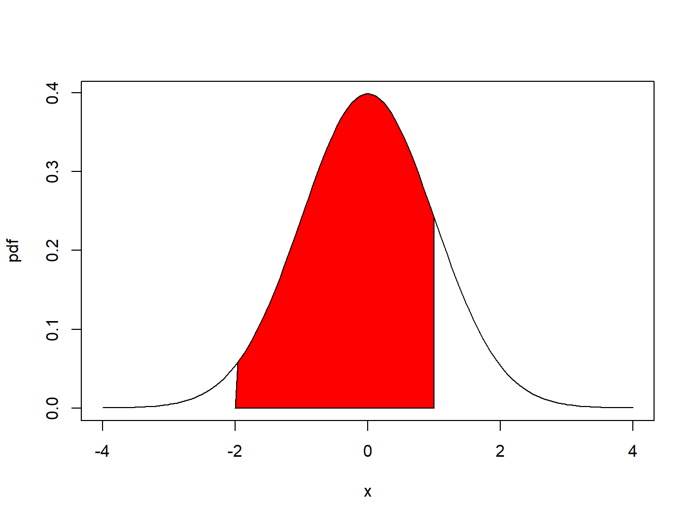
Figure 2.2: \(Pr(-2 \leq X \leq 1)\) is represented by the area under the probability curve.
2.1.2.1 The uniform distribution on an interval
Let \(X\) denote the annual return on Microsoft stock and let \(a\) and \(b\) be two real numbers such that \(a<b\). Suppose that the annual return on Microsoft stock can take on any value between \(a\) and \(b\). That is, the sample space is restricted to the interval \(S_{X}=\{x\in\mathcal{R}:a\leq x\leq b\}\). Further suppose that the probability that \(X\) will belong to any subinterval of \(S_{X}\) is proportional to the length of the interval. In this case, it is said that \(X\) is uniformly distributed on the interval \([a,b]\). The pdf of \(X\) has a very simple mathematical form: \[
f(x)=\left\{ \begin{array}{c}
\frac{1}{b-a}\\
0
\end{array}\right.\begin{array}{c}
\textrm{for }a\leq x\leq b,\\
\textrm{otherwise,}
\end{array}
\] and is presented graphically as a rectangle. It is easy to see that the area under the curve over the interval \([a,b]\) (area of rectangle) integrates to one: \[
\int_{a}^{b}\frac{1}{b-a}~dx=\frac{1}{b-a}\int_{a}^{b}~dx=\frac{1}{b-a}\left[x\right]_{a}^{b}=\frac{1}{b-a}[b-a]=1.
\]
Example 2.5 (Uniform distribution on [-1 1]) Let \(a=-1\) and \(b=1,\) so that \(b-a=2\). Consider computing the probability that \(X\) will be between -0.5 and 0.5. You must solve: \[
\Pr(-0.5\leq X\leq0.5)=\int_{-0.5}^{0.5}\frac{1}{2}~dx=\frac{1}{2}\left[x\right]_{-0.5}^{0.5}=\frac{1}{2}\left[0.5-(-0.5)\right]=\frac{1}{2}.
\] Next, consider computing the probability that the return will fall in the interval \([0,\delta]\) where \(\delta\) is some small number less than \(b=1\): \[
\Pr(0\leq X\leq\delta)=\frac{1}{2}\int_{0}^{\delta}dx=\frac{1}{2}[x]_{0}^{\delta}=\frac{1}{2}\delta.
\] As \(\delta\rightarrow0\), \(\Pr(0\leq X\leq\delta)\rightarrow\Pr(X=0)\).
Using the above result notice that \[
\lim_{\delta\rightarrow0}\Pr(0\leq X\leq\delta)=\Pr(X=0)=\lim_{\delta\rightarrow0}\frac{1}{2}\delta=0.
\] Hence, for continuous random variables probabilities are defined on intervals but not at distinct points. \(\blacksquare\)
2.1.2.2 The standard normal distribution
The normal or Gaussian distribution is perhaps the most famous and most useful continuous distribution in all of statistics. The shape of the normal distribution is the familiar “bell curve”. As you shall see, it can be used to describe the probabilistic behavior of stock returns although other distributions may be more appropriate.
If a random variable \(X\) follows a standard normal distribution then you often write \(X\sim N(0,1)\) as short-hand notation. This distribution is centered at zero and has inflection points at \(\pm1\).2 The pdf of a standard normal random variable is given by: \[
f(x)=\frac{1}{\sqrt{2\pi}}\cdot e^{-\frac{1}{2}x^{2}},~-\infty\leq x\leq\infty.
\tag{2.2}\] It can be shown via the change of variables formula in calculus that the area under the standard normal curve is one: \[
\int_{-\infty}^{\infty}\frac{1}{\sqrt{2\pi}}\cdot e^{-\frac{1}{2}x^{2}}dx=1.
\] The standard normal distribution is illustrated in Figure Figure 2.3. Notice that the distribution is symmetric about zero; i.e., the distribution has exactly the same form to the left and right of zero. Because the standard normal pdf formula is used so often it is given its own special symbol \(\phi(x)\).
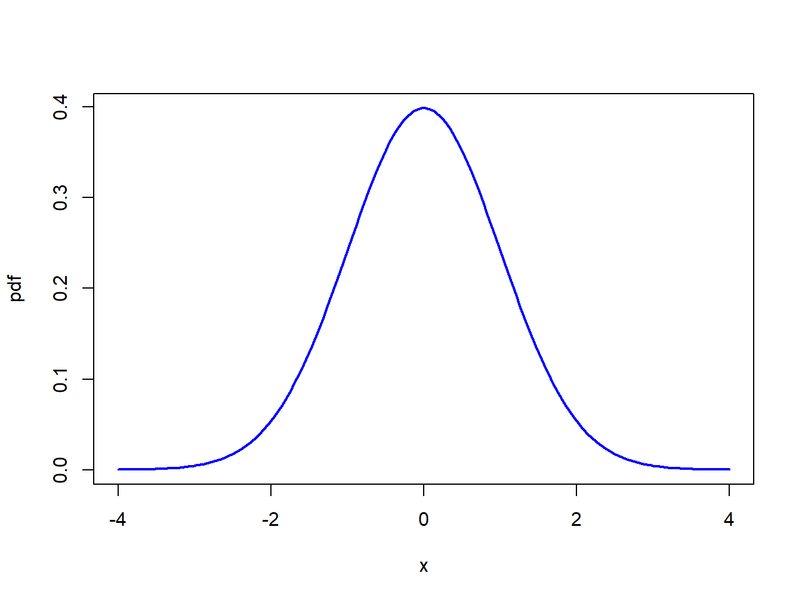
Figure 2.3: Standard normal density.
The normal distribution has the annoying feature that the area under the normal curve cannot be evaluated analytically. That is: \[
\Pr(a\leq X\leq b)=\int_{a}^{b}\frac{1}{\sqrt{2\pi}}\cdot e^{-\frac{1}{2}x^{2}}~dx,
\] does not have a closed form solution. The above integral must be computed by numerical approximation. Areas under the normal curve, in one form or another, are given in tables in almost every introductory statistics book and standard statistical software can be used to find these areas. Some useful approximate results are: \[\begin{align*}
\Pr(-1 & \leq X\leq1)\approx0.67,\\
\Pr(-2 & \leq X\leq2)\approx0.95,\\
\Pr(-3 & \leq X\leq3)\approx0.99.
\end{align*}\]
2.1.3 The cumulative distribution function
Definition 2.6 (Cumulative distribution function) The cumulative distribution function (cdf) of a random variable \(X\) (discrete or continuous), denoted \(F_{X}\), is the probability that \(X\leq x\): \[
F_{X}(x)=\Pr(X\leq x),~-\infty\leq x\leq\infty.
\]
The cdf has the following properties:
If \(x_{1}<x_{2}\) then \(F_{X}(x_{1})\leq F_{X}(x_{2})\)
\(F_{X}^{\prime}(x)=\frac{d}{dx}F_{X}(x)=f(x)\) if \(X\) is a continuous random variable and \(F_{X}(x)\) is continuous and differentiable.
Example 2.6 (CDF for a discrete random variable) The cdf for the discrete distribution of Microsoft from Table Table 2.1 is given by: \[
F_{X}(x)=\left\{ \begin{array}{c}
0,\\
0.05,\\
0.25,\\
0.75\\
0.95\\
1
\end{array}\right.\begin{array}{c}
x<-0.3\\
-0.3\leq x<0\\
0\leq x<0.1\\
0.1\leq x<0.2\\
0.2\leq x<0.5\\
x>0.5
\end{array}
\] and is illustrated in Figure Figure 2.4. \(\blacksquare\)
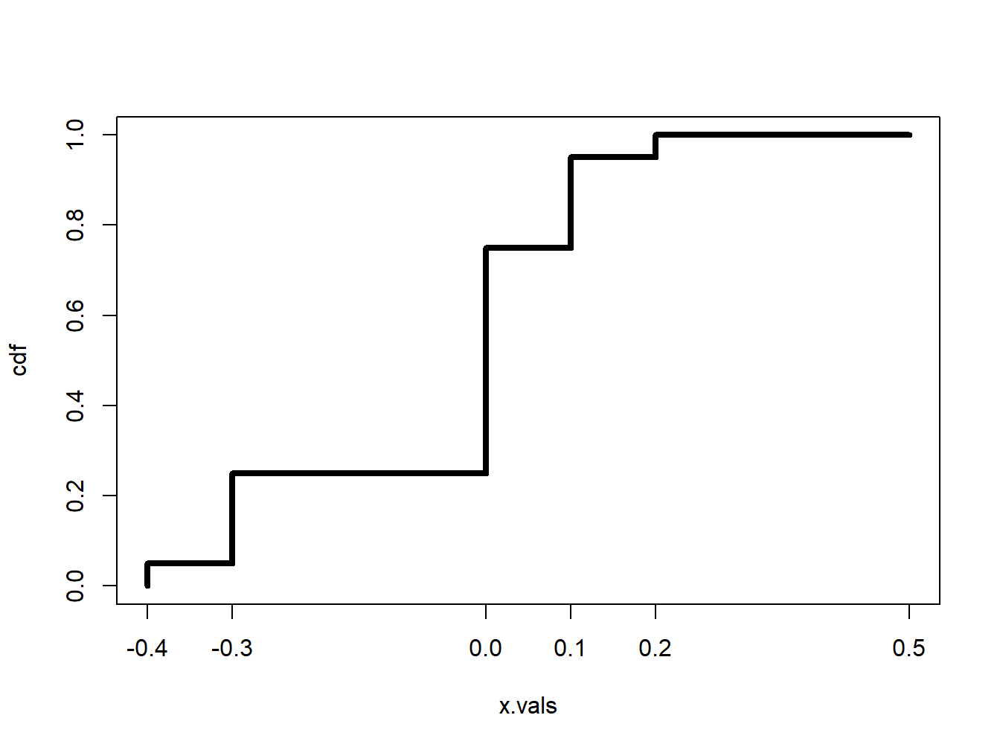
Figure 2.4: CDF of Discrete Distribution for Microsoft Stock Return.
Example 2.7 (CDF for a uniform random variable) The cdf for the uniform distribution over \([a,b]\) can be determined analytically: \[\begin{align*}
F_{X}(x) & =\Pr(X<x)=\int_{-\infty}^{x}f(t)~dt\\
& =\frac{1}{b-a}\int_{a}^{x}~dt=\frac{1}{b-a}[t]_{a}^{x}=\frac{x-a}{b-a}.
\end{align*}\] You can determine the pdf of \(X\) directly from the cdf via, \[
f(x)=F_{X}^{\prime}(x)=\frac{d}{dx}F_{X}(x)=\frac{1}{b-a}.
\]\(\blacksquare\)
Example 2.8 (CDF for a standard normal random variable) The cdf of standard normal random variable \(X\) is used so often in statistics that it is given its own special symbol: \[
\Phi(x)=F_{X}(x)=\int_{-\infty}^{x}\frac{1}{\sqrt{2\pi}}e^{-\frac{1}{2}z^{2}}~dz.
\tag{2.3}\] The cdf \(\Phi(x)\), however, does not have an analytic representation like the cdf of the uniform distribution and so the integral in Equation 2.3 must be approximated using numerical techniques. A graphical representation of \(\Phi(x)\) is given in Figure Figure 2.5. Because the standard normal pdf, \(\phi(x)\), is symmetric about zero and bell-shaped the standard normal CDF, \(\Phi(x)\), has an “S” shape where the middle of the “S” is at zero. \(\blacksquare\)
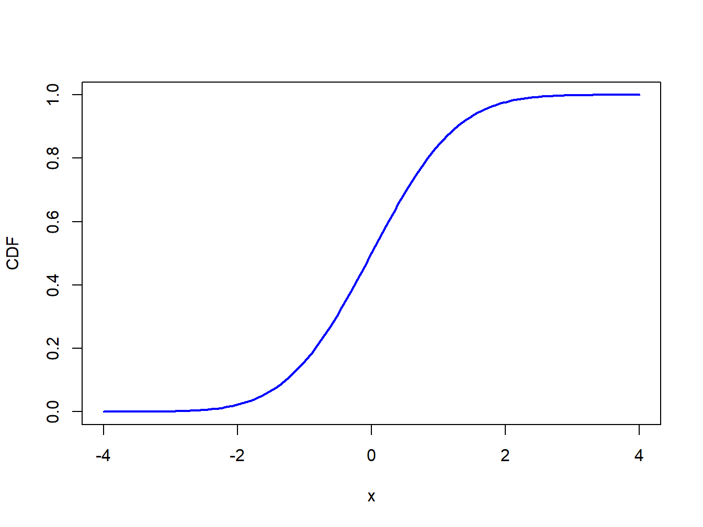
Figure 2.5: Standard normal cdf \(\Phi(x)\).
2.1.4 Quantiles of the distribution of a random variable
Definition 2.7 (Quantiles of the distribution of a random variable) Consider a random variable \(X\) with continuous cdf \(F_{X}(x)\). For \(0\leq\alpha\leq1\), the \(100\cdot\alpha\%\)quantile of the distribution for \(X\) is the value \(q_{\alpha}\) that satisfies: \[
F_{X}(q_{\alpha})=\Pr(X\leq q_{\alpha})=\alpha.
\] For example, the 5% quantile of \(X\), \(q_{0.05}\), satisfies, \[
F_{X}(q_{0.05})=\Pr(X\leq q_{0.05})=0.05.
\]
The median of the distribution is the 50% quantile. That is, the median, \(q_{0.5}\), satisfies, \[
F_{X}(q_{0.5})=\Pr(X\leq q_{0.5})=0.5.
\]
If \(F_{X}\) is invertible then \(q_{\alpha}\) may be determined analytically as: \[
q_{\alpha}=F_{X}^{-1}(\alpha)
\tag{2.4}\] where \(F_{X}^{-1}\) denotes the inverse function of \(F_{X}\).3 Hence, the 5% quantile and the median may be determined from \[
q_{0.05}=F_{X}^{-1}(.05),q_{0.5}=F_{X}^{-1}(.5).
\] The inverse cdf \(F_{X}^{-1}\) is sometimes called the quantile function.
Example 2.9 (Quantiles from a uniform distribution) Let \(X\sim U[a,b]\) where \(b>a\). Recall, the cdf of \(X\) is given by: \[
F_{X}(x)=\frac{x-a}{b-a},~a\leq x\leq b,
\] which is continuous and strictly increasing. Given \(\alpha\in[0,1]\) such that \(F_{X}(x)=\alpha\), solving for \(x\) gives the inverse cdf: \[
x=F_{X}^{-1}(\alpha)=\alpha(b-a)+a.
\tag{2.5}\] Using Equation 2.5, the 5% quantile and median, for example, are given by: \[\begin{align*}
q_{0.05} & =F_{X}^{-1}(.05)=.05(b-a)+a=.05b+.95a,\\
q_{0.5} & =F_{X}^{-1}(.5)=.5(b-a)+a=.5(a+b).
\end{align*}\] If \(a=0\) and \(b=1\), then \(q_{0.05}=0.05\) and \(q_{0.5}=0.5\). \(\blacksquare\)
Example 2.10 (Quantiles from a standard normal distribution) Let \(X\sim N(0,1).\) The quantiles of the standard normal distribution are determined by solving \[
q_{\alpha}=\Phi^{-1}(\alpha),
\tag{2.6}\] where \(\Phi^{-1}\) denotes the inverse of the cdf \(\Phi\). This inverse function must be approximated numerically and is available in most spreadsheets and statistical software. Using the numerical approximation to the inverse function, the 1%, 2.5%, 5%, 10% quantiles and median are given by: \[\begin{align*}
q_{0.01} & =\Phi^{-1}(.01)=-2.33,~q_{0.025}=\Phi^{-1}(.025)=-1.96,\\
q_{0.05} & =\Phi^{-1}(.05)=-1.645,~q_{0.10}=\Phi^{-1}(.10)=-1.28,\\
q_{0.5} & =\Phi^{-1}(.5)=0.
\end{align*}\] Often, the standard normal quantile is denoted \(z_{\alpha}\). \(\blacksquare\)
2.1.5 R functions for discrete and continuous distributions
R has built-in functions for a number of discrete and continuous distributions that are commonly used in probability modeling and statistical analysis. These are summarized in Table Table 2.2. For each distribution, there are four functions starting with d, p, q, and r that compute density (pdf) values, cumulative probabilities (cdf), quantiles (inverse cdf) and random draws, respectively. Consider, for example, the functions associated with the normal distribution. The functions dnorm(), pnorm() and qnorm() evaluate the standard normal density Equation 2.2, the cdf Equation 2.3, and the inverse cdf or quantile function Equation 2.6, respectively, with the default values mean = 0 and sd = 1. The function rnorm() returns a specified number of simulated values from the normal distribution.
Table 2.2: Probability distributions in base R.
Distribution
Function (root)
Parameters
Defaults
beta
beta
shape1, shape2
_, _
binomial
binom
size, prob
_, _
cauchy
cauchy
location, scale
0, 1
chi-squared
chisq
df, ncp
_, 1
F
f
df1, df2
_, _
gamma
gamma
shape, rate, scale
_, 1, 1/rate
geometric
geom
prob
_
hyper-geometric
hyper
m, n, k
_, _, _
log-normal
lnorm
meanlog, sdlog
0, 1
logistic
logis
location, scale
0, 1
negative binomial
nbinom
size, prob, mu
_,_,_
normal
norm
mean, sd
0, 1
Poisson
pois
Lambda
1
Student’s t
t
df, ncp
_, 1
uniform
unif
min, max
0, 1
Weibull
weibull
shape, scale
_, 1
Wilcoxon
wilcoxon
m, n
_, _
Commonly used distributions used in finance application are the binomial, chi-squared, log normal, normal, and Student’s t.
2.1.5.1 Finding areas under the standard normal curve
Let \(X\) denote a standard normal random variable. Given that the total area under the normal curve is one and the distribution is symmetric about zero, the following results hold:
\(\Pr(X\leq z)=1-\Pr(X\geq z)\) and \(\Pr(X\geq z)=1-\Pr(X\leq z)\)
\(\Pr(X\geq z)=\Pr(X\leq-z)\)
\(\Pr(X\geq0)=\Pr(X\leq0)=0.5\)
The following examples show how to do probability calculations with standard normal random variables.
Example 2.11 (Finding areas under the normal curve using R) First, consider finding \(\Pr(X\geq2)\). By the symmetry of the normal distribution, \(\Pr(X\geq2)=\Pr(X\leq-2)=\Phi(-2)\). In R use:
Code
pnorm(-2)#> [1] 0.0228
Next, consider finding \(\Pr(-1\leq X\leq2)\). Using the cdf, you compute \(\Pr(-1\leq X\leq2)=\Pr(X\leq2)-\Pr(X\leq-1)=\Phi(2)-\Phi(-1)\). In R use:
Code
pnorm(2) -pnorm(-1)#> [1] 0.819
Finally, using R the exact values for \(\Pr(-1\leq X\leq1)\), \(\Pr(-2\leq X\leq2)\) and \(\Pr(-3\leq X\leq3)\) are:
When working with a probability distribution, it is a good idea to make plots of the pdf or cdf to reveal important characteristics. The following examples illustrate plotting distributions using R.
Example 2.12 (Plotting the standard normal curve) The graphs of the standard normal pdf and cdf in Figures Figure 2.3 and Figure 2.5 were created using the following R code:
Example 2.13 (Shading a region under the standard normal curve) Figure Figure 2.2 showing \(\Pr(-2\leq X\leq1)\) as a red shaded area is created with the following code:
Code
lb =-2ub =1x.vals =seq(-4, 4, length=150)d.vals =dnorm(x.vals)# plot normal densityplot(x.vals, d.vals, type="l", xlab="x", ylab="pdf")i = x.vals >= lb & x.vals <= ub# add shaded region between -2 and 1polygon(c(lb, x.vals[i], ub), c(0, d.vals[i], 0), col="red")
\(\blacksquare\)
2.1.6 Shape characteristics of probability distributions
Very often you would like to know certain shape characteristics of a probability distribution. You might want to know where the distribution is centered, and how spread out the distribution is about the central value. You might want to know if the distribution is symmetric about the center or if the distribution has a long left or right tail. For stock returns you might want to know about the likelihood of observing extreme values for returns representing market crashes. This means that you would like to know about the amount of probability in the extreme tails of the distribution. In this section I will discuss four important shape characteristics of a probability distribution:
expected value (mean): measures the center of mass of a distribution
variance and standard deviation (volatility): measures the spread about the mean
skewness: measures symmetry about the mean
kurtosis: measures “tail thickness”
2.1.6.1 Expected Value
The expected value of a random variable \(X,\) denoted \(E[X]\) or \(\mu_{X}\), measures the center of mass of the pdf.
Definition 2.8 (Expected value of discrete random variable) For a discrete random variable \(X\) with sample space \(S_{X}\), the expected value is defined as: \[
\mu_{X}=E[X]=\sum_{x\in S_{X}}x\cdot\Pr(X=x).
\tag{2.7}\]
Equation Equation 2.7 shows that \(E[X]\) is a probability weighted average of the possible values of \(X\).
Example 2.14 (Expected value of discrete random variable) Using the discrete distribution for the return on Microsoft stock in Table Table 2.1, the expected return is computed as: \[\begin{align*}
E[X] =&(-0.3)\cdot(0.05)+(0.0)\cdot(0.20)+(0.1)\cdot(0.5)\\
&+(0.2)\cdot(0.2)+(0.5)\cdot(0.05)\\
=&0.10.
\end{align*}\]
\(\blacksquare\)
Example 2.15 (Expected value of Bernoulli and binomial random variables) Let \(X\) be a Bernoulli random variable with success probability \(\pi\). Then, \[
E[X]=0\cdot(1-\pi)+1\cdot\pi=\pi.
\] That is, the expected value of a Bernoulli random variable is its probability of success. Now, let \(Y\sim B(n,\pi)\). It can be shown that: \[
E[Y]=\sum_{k=0}^{n}k\binom{n}{k}\pi^{k}(1-\pi)^{n-k}=n\pi.
\tag{2.8}\]
\(\blacksquare\)
Definition 2.9 (Expected value of a continuous random variable) For a continuous random variable \(X\) with pdf \(f(x)\), the expected value is defined as: \[
\mu_{X}=E[X]=\int_{-\infty}^{\infty}x\cdot f(x)~dx.
\tag{2.9}\]
Example 2.16 (Expected value of a uniform random variable) Suppose \(X\) has a uniform distribution over the interval \([a,b]\). Then, \[\begin{align*}
E[X] & =\frac{1}{b-a}\int_{a}^{b}x~dx=\frac{1}{b-a}\left[\frac{1}{2}x^{2}\right]_{a}^{b}\\
& =\frac{1}{2(b-a)}\left[b^{2}-a^{2}\right]\\
& =\frac{(b-a)(b+a)}{2(b-a)}=\frac{b+a}{2}.
\end{align*}\] If \(b=-1\) and \(a=1\), then \(E[X]=0\). \(\blacksquare\)
Example 2.17 (Expected value of a standard normal random variable) Let \(X\sim N(0,1)\). Then it can be shown that: \[
E[X]=\int_{-\infty}^{\infty}x\cdot\frac{1}{\sqrt{2\pi}}e^{-\frac{1}{2}x^{2}}~dx=0.
\] Hence, the standard normal distribution is centered at zero. \(\blacksquare\)
2.1.6.2 Expectation of a function of a random variable
The other shape characteristics of the distribution of a random variable \(X\) are based on expectations of certain functions of \(X\).
Definition 2.10 (Expected value of a function of a random variable) Let \(g(X)\) denote some function of the random variable \(X\). If \(X\) is a discrete random variable with sample space \(S_{X}\) then: \[
E[g(X)]=\sum_{x\in S_{X}}g(x)\cdot\Pr(X=x),
\tag{2.10}\] and if \(X\) is a continuous random variable with pdf \(f\) then, \[
E[g(X)]=\int_{-\infty}^{\infty}g(x)\cdot f(x)~dx.
\tag{2.11}\]
2.1.6.3 Variance and standard deviation
The variance of a random variable \(X\), denoted \(\mathrm{var}(X)\) or \(\sigma_{X}^{2}\), measures the spread of the distribution about the mean using the function \(g(X)=(X-\mu_{X})^{2}\). If most values of \(X\) are close to \(\mu_{X}\) then on average \((X-\mu_{X})^{2}\) will be small. In contrast, if many values of \(X\) are far below and/or far above \(\mu_{X}\) then on average \((X-\mu_{X})^{2}\) will be large. Squaring the deviations about \(\mu_{X}\) guarantees a positive value.
Definition 2.11 (Variance and standard deviation) For a discrete or continuous random variable \(X\), the variance and standard deviation of \(X\) are defined as: \[
\sigma_{X}^{2}=\mathrm{var}(X)=E[(X-\mu_{X})^{2}],
\tag{2.12}\]\[
\sigma_{X} = \mathrm{sd}(X)= \sqrt{\sigma_{X}^{2}} = \sigma_{X}.
\tag{2.13}\]
Because \(\sigma_{X}^{2}\) represents an average squared deviation, it is not in the same units as \(X\). The standard deviation of \(X\) is the square root of the variance and is in the same units as \(X\). For “bell-shaped” distributions, \(\sigma_{X}\) measures the typical size of a deviation from the mean value.
The computation of Equation 2.12 can often be simplified by using the result: \[
\mathrm{var}(X)=E[(X-\mu_{X})^{2}]=E[X^{2}]-\mu_{X}^{2}
\tag{2.14}\] You will learn how to derive this result later in the chapter.
Example 2.18 (Variance and standard deviation for a discrete random variable) Using the discrete distribution for the return on Microsoft stock in Table Table 2.1 and the result that \(\mu_{X}=0.1\), it follows that: \[\begin{align*}
\mathrm{var}(X) & =(-0.3-0.1)^{2}\cdot(0.05)+(0.0-0.1)^{2}\cdot(0.20)+(0.1-0.1)^{2}\cdot(0.5)\\
& +(0.2-0.1)^{2}\cdot(0.2)+(0.5-0.1)^{2}\cdot(0.05)\\
& =0.020.
\end{align*}\] Alternatively, you can compute \(\mathrm{var}(X)\) using Equation 2.14: \[\begin{align*}
E[X^{2}]-\mu_{X}^{2} & =(-0.3)^{2}\cdot(0.05)+(0.0)^{2}\cdot(0.20)+(0.1)^{2}\cdot(0.5)\\
& +(0.2)^{2}\cdot(0.2)+(0.5)^{2}\cdot(0.05)-(0.1)^{2}\\
& =0.020.
\end{align*}\] The standard deviation is \(\sqrt{0.020}=0.141\). Given that the distribution is fairly bell-shaped you can say that typical values deviate from the mean value of \(10\%\) by about \(\pm 14.1\%\). \(\blacksquare\)
Example 2.19 (Variance and standard deviation of a Bernoulli and binomial random variables) Let \(X\) be a Bernoulli random variable with success probability \(\pi\). Given that \(\mu_{X}=\pi\) it follows that: \[\begin{align*}
\mathrm{var}(X) & =(0-\pi)^{2}\cdot(1-\pi)+(1-\pi)^{2}\cdot\pi\\
& =\pi^{2}(1-\pi)+(1-\pi)^{2}\pi\\
& =\pi(1-\pi)\left[\pi+(1-\pi)\right]\\
& =\pi(1-\pi),\\
\mathrm{sd}(X) & =\sqrt{\pi(1-\pi)}.
\end{align*}\] Now, let \(Y\sim B(n,\pi)\): It can be shown that: \[
\mathrm{var}(Y)=n\pi(1-\pi)
\] and so \(\mathrm{sd}(Y)=\sqrt{n\pi(1-\pi)}\). \(\blacksquare\)
Example 2.20 (Variance and standard deviation of a uniform random variable) Let \(X\sim U[a,b]\). Using Equation 2.14 and \(\mu_{X}=\frac{a+b}{2}\), after some algebra, it can be shown that: \[
\mathrm{var}(X)=E[X^{2}]-\mu_{X}^{2}=\frac{1}{b-a}\int_{a}^{b}x^{2}~dx-\left(\frac{a+b}{2}\right)^{2}=\frac{1}{12}(b-a)^{2},
\] and \(\mathrm{sd}(X)=(b-a)/\sqrt{12}\). \(\blacksquare\)
Example 2.21 (Variance and standard deviation of a standard normal random variable) Let \(X\sim N(0,1)\). Here, \(\mu_{X}=0\) and it can be shown that: \[
\sigma_{X}^{2}=\int_{-\infty}^{\infty}x^{2}\cdot\frac{1}{\sqrt{2\pi}}e^{-\frac{1}{2}x^{2}}~dx=1.
\] It follows that sd\((X)=1\). \(\blacksquare\)
2.1.6.4 The general normal distribution
Recall, if \(X\) has a standard normal distribution then \(E[X]=0\), \(\mathrm{var}(X)=1\). A general normal random variable \(X\) has \(E[X]=\mu_{X}\) and \(\mathrm{var}(X)=\sigma_{X}^{2}\) and is denoted \(X\sim N(\mu_{X},\sigma_{X}^{2})\). Its pdf is given by: \[
f(x)=\frac{1}{\sqrt{2\pi\sigma_{X}^{2}}}\exp\left\{ -\frac{1}{2\sigma_{X}^{2}}\left(x-\mu_{X}\right)^{2}\right\} ,~-\infty\leq x\leq\infty.
\tag{2.15}\] Showing that \(E[X]=\mu_{X}\) and \(\mathrm{var}(X)=\sigma_{X}^{2}\) is a bit of work and is good calculus practice. As with the standard normal distribution, areas under the general normal curve cannot be computed analytically. Using numerical approximations, it can be shown that: \[\begin{align*}
\Pr(\mu_{X}-\sigma_{X} & <X<\mu_{X}+\sigma_{X})\approx0.67,\\
\Pr(\mu_{X}-2\sigma_{X} & <X<\mu_{X}+2\sigma_{X})\approx0.95,\\
\Pr(\mu_{X}-3\sigma_{X} & <X<\mu_{X}+3\sigma_{X})\approx0.99.
\end{align*}\] Hence, for a general normal random variable about 95% of the time you expect to see values within \(\pm\) 2 standard deviations from its mean. Observations more than three standard deviations from the mean are very unlikely.
Example 2.22 (Normal distribution for monthly returns) Let \(R\) denote the monthly return on an investment in Microsoft stock, and assume that it is normally distributed with mean \(\mu_{R}=0.01\) and standard deviation \(\sigma_{R}=0.10\). That is, \(R\sim N(0.01,(0.10)^{2})\). Notice that \(\sigma_{R}^{2}=0.01\) and is not in units of return per month. Figure Figure 2.6 illustrates the distribution and is created using:
Figure 2.6: Normal distribution for the monthly returns on Microsoft: \(R\sim N(0.01,(0.10)^{2})\).
Notice that essentially all of the probability lies between \(-0.3\) and \(0.3\). Using the R function pnorm(), you can easily compute the probabilities \(\Pr(R<-0.5)\), \(\Pr(R<0)\), \(\Pr(R>0.5)\) and \(\Pr(R>1)\):
Hence, over the next month, there are 1% and 5% chances of losing more than 22.2% and 15.5%, respectively. In addition, there are 5% and 1% chances of gaining more than 17.5% and 24.3%, respectively. \(\blacksquare\)
Example 2.23 (Risk-return tradeoff) Consider the following investment problem. You can invest in two non-dividend paying stocks, Amazon and Boeing, over the next month. Let \(R_{A}\) denote the monthly return on Amazon and \(R_{B}\) denote the monthly return on Boeing. Assume that \(R_{A}\sim N(0.02,(0.10)^{2})\) and \(R_{B}\sim N(0.01,(0.05)^{2})\). Figure Figure 2.7 shows the pdfs for the two returns. Notice that \(\mu_{A}=0.02>\mu_{B}=0.01\) but also that \(\sigma_{A}=0.10>\sigma_{B}=0.05\). The return you expect on Amazon is bigger than the return you expect on Boeing but the variability of Amazon’s return is also greater than the variability of Boeing’s return. The high return variability (volatility) of Amazon reflects the higher risk associated with investing in Amazon compared to investing in Boeing. If you invest in Boeing you get a lower expected return, but you also get less return variability or risk. For example, the probability of losing more than \(10\%\) in one month for Amazon is
Code
pnorm(-0.1, 0.02, 0.1)#> [1] 0.115
and the probability of losing more than \(10\%\) in one month for Boeing is
Code
pnorm(-0.1, 0.01, 0.05)#> [1] 0.0139
Of course, there is also a higher probability for upside return for Amazon than for Boeing. This example illustrates the fundamental “no free lunch” principle of economics and finance: you can’t get something for nothing. In general, to get a higher expected return you must be prepared to take on higher risk. \(\blacksquare\)
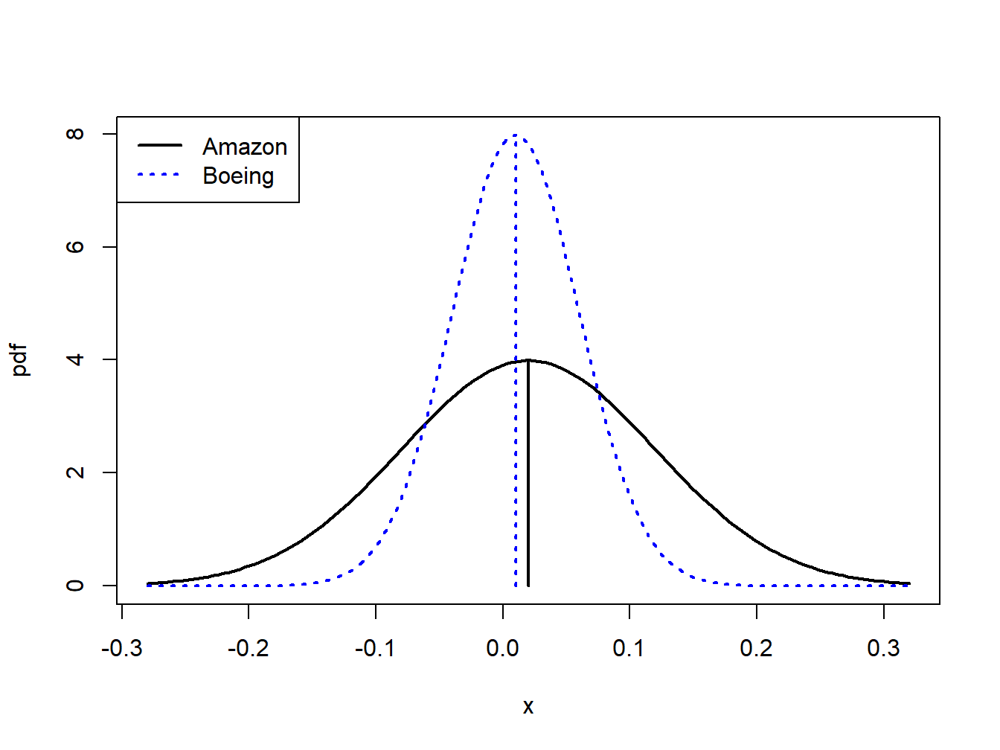
Figure 2.7: Risk-return tradeoff between one-month investments in Amazon and Boeing stock.
Example 2.24 (Why the normal distribution may not be appropriate for simple returns) Let \(R_{t}\) denote the simple annual return on an asset, and suppose that \(R_{t}\sim N(0.05,(0.50)^{2})\). Because asset prices must be non-negative, \(R_{t}\) must always be larger than \(-1\). However, the normal distribution is defined for \(-\infty\leq R_{t}\leq\infty\) and based on the assumed normal distribution \(\Pr(R_{t}<-1)=0.018\). That is, there is a 1.8% chance that \(R_{t}\) is smaller than \(-1\). This implies that there is a 1.8% chance that the asset price at the end of the year will be negative! This is one reason why the normal distribution may not be appropriate for simple returns. \(\blacksquare\)
Example 2.25 (The normal distribution is more appropriate for continuously compounded returns) Let \(r_{t}=\ln(1+R_{t})\) denote the continuously compounded annual return on an asset, and suppose that \(r_{t}\sim N(0.05,(0.50)^{2})\). Unlike the simple return, the continuously compounded return can take on values less than \(-1\). In fact, \(r_{t}\) is defined for \(-\infty\leq r_{t}\leq\infty\). For example, suppose \(r_{t}=-2\). This implies a simple return of \(R_{t}=e^{-2}-1=-0.865\). Then \(\Pr(r_{t}\leq-2)=\Pr(R_{t}\leq-0.865)=0.00002\). Although the normal distribution allows for values of \(r_{t}\) smaller than \(-1\), the implied simple return \(R_{t}\) will always be greater than \(-1\). \(\blacksquare\)
2.1.6.5 The Log-Normal Distribution
Let \(X\)\(\sim N(\mu_{X},\sigma_{X}^{2})\), which is defined for \(-\infty<X<\infty\). The log-normally distributed random variable \(Y\) is determined from the normally distributed random variable \(X\) using the transformation \(Y=e^{X}\). Here, \(Y\) is log-normally distributed and you write: \[
Y\sim\ln N(\mu_{X},\sigma_{X}^{2}),~0<Y<\infty.
\tag{2.16}\] The pdf of the log-normal distribution for \(Y\) can be derived from the normal distribution for \(X\) using the change-of-variables formula from calculus and is given by: \[
f(y)=\frac{1}{y\sigma_{X}\sqrt{2\pi}}e^{-\frac{(\ln y-\mu_{X})^{2}}{2\sigma_{X}^{2}}}.
\tag{2.17}\] Due to the exponential transformation, \(Y\) is only defined for non-negative values. It can be shown that: \[
\begin{aligned}
\mu_{Y} & =E[Y]=e^{\mu_{X}+\sigma_{X}^{2}/2},\\
\sigma_{Y}^{2} & =\mathrm{var}(Y)=e^{2\mu_{X}+\sigma_{X}^{2}}(e^{\sigma_{X}^{2}}-1).\nonumber
\end{aligned}
\tag{2.18}\]
Example 2.26 (Log-normal distribution for simple returns) Let \(r_{t}=\ln(P_{t}/P_{t-1})\) denote the continuously compounded monthly return on an asset and assume that \(r_{t}\sim N(0.05,(0.50)^{2})\). That is, \(\mu_{r}=0.05\) and \(\sigma_{r}=0.50\). Let \(R_{t}=(P_{t}-P_{t-1})/P_{t}\) denote the simple monthly return. The relationship between \(r_{t}\) and \(R_{t}\) is given by \(r_{t}=\ln(1+R_{t})\) and \(1+R_{t}=e^{r_{t}}\). Since \(r_{t}\) is normally distributed, \(1+R_{t}\) is log-normally distributed. Notice that the distribution of \(1+R_{t}\) is only defined for positive values of \(1+R_{t}\). This is appropriate since the smallest value that \(R_{t}\) can take on is \(-1\). Using Equation 2.18, the mean and variance for \(1+R_{t}\) are given by: \[\begin{align*}
\mu_{1+R} & =e^{0.05+(0.5)^{2}/2}=1.191\\
\sigma_{1+R}^{2} & =e^{2(0.05)+(0.5)^{2}}(e^{(0.5)^{2}}-1)=0.563
\end{align*}\] The pdfs for \(r_{t}\) and \(R_{t}\) are shown in Figure Figure 2.8. \(\blacksquare\)
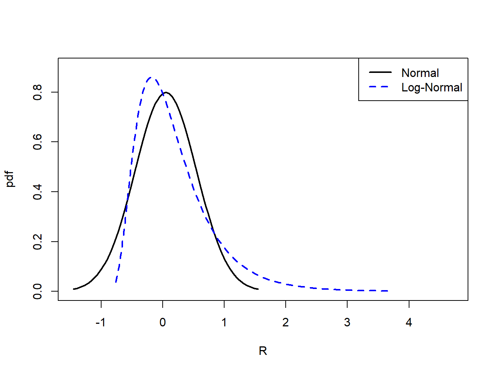
Figure 2.8: Normal distribution for \(r_{t}\) and log-normal distribution for \(R_{t}=e^{r_{t}}-1\).
2.1.6.6 Skewness
Definition 2.12 (Skewness) The skewness of a random variable \(X\), denoted \(\mathrm{skew}(X)\), measures the symmetry of a distribution about its mean value using the function \(g(X)=(X-\mu_{X})^{3}/\sigma_{X}^{3}\), where \(\sigma_{X}^{3}\) is just \(\mathrm{sd}(X)\) raised to the third power: \[
\mathrm{skew}(X)=\frac{E[(X-\mu_{X})^{3}]}{\sigma_{X}^{3}}
\tag{2.19}\]
When \(X\) is far below its mean, \((X-\mu_{X})^{3}\) is a big negative number. When \(X\) is far above its mean, \((X-\mu_{X})^{3}\) is a big positive number. Hence, if there are more big values of \(X\) below \(\mu_{X}\) then \(\mathrm{skew}(X)<0\). Conversely, if there are more big values of \(X\) above \(\mu_{X}\) then \(\mathrm{skew}(X)>0\). If \(X\) has a symmetric distribution, then \(\mathrm{skew}(X)=0\) since positive and negative values in Equation 2.19 cancel out. If \(\mathrm{skew}(X)>0\), then the distribution of \(X\) has a long right tail and if \(\mathrm{skew}(X)<0\) the distribution of \(X\) has a long left tail. These cases are illustrated in Figure Figure 2.9.
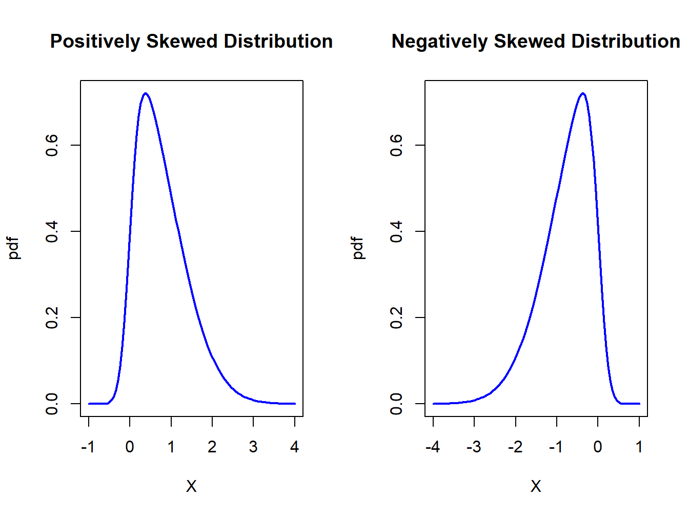
Figure 2.9: Skewed distributions.
Example 2.27 (Skewness for a discrete random variable) From the discrete distribution for the return on Microsoft stock in Table Table 2.1, and the results \(\mu_{X}=0.1\) and \(\sigma_{X}=0.141\), it follows that: \[\begin{align*}
\mathrm{skew}(X) & =[(-0.3-0.1)^{3}\cdot(0.05)+(0.0-0.1)^{3}\cdot(0.20)+(0.1-0.1)^{3}\cdot(0.5)\\
& +(0.2-0.1)^{3}\cdot(0.2)+(0.5-0.1)^{3}\cdot(0.05)]/(0.141)^{3}\\
& =0.0.
\end{align*}\]\(\blacksquare\)
Example 2.28 (Skewness for a normal random variable) Suppose \(X\) has a general normal distribution with mean \(\mu_{X}\) and variance \(\sigma_{X}^{2}\). Then it can be shown that: \[
\mathrm{skew}(X)=\int_{-\infty}^{\infty}\frac{(x-\mu_{X})^{3}}{\sigma_{X}^{3}}\cdot\frac{1}{\sqrt{2\pi\sigma^{2}}}e^{-\frac{1}{2\sigma_{X}^{2}}\left(x-\mu_{X}\right)^{2}}~dx=0.
\] This result is expected since the normal distribution is symmetric about it’s mean value \(\mu_{X}\). \(\blacksquare\)
Example 2.29 (Skewness for a log-Normal random variable) Let \(Y=e^{X},\) where \(X\sim N(\mu_{X},\sigma_{X}^{2})\), be a log-normally distributed random variable with parameters \(\mu_{X}\) and \(\sigma_{X}^{2}\). Then it can be shown that: \[
\mathrm{skew}(Y)=\left(e^{\sigma_{X}^{2}}+2\right)\sqrt{e^{\sigma_{X}^{2}}-1}>0.
\] Notice that \(\mathrm{skew}(Y)\) is always positive, indicating that the distribution of \(Y\) has a long right tail, and that it is an increasing function of \(\sigma_{X}^{2}\). This positive skewness is illustrated in Figure Figure 2.8. \(\blacksquare\)
2.1.6.7 Kurtosis
Definition 2.13 (Kurtosis) The kurtosis of a random variable \(X\), denoted \(\mathrm{kurt}(X)\), measures the thickness in the tails of a distribution and is based on \(g(X)=(X-\mu_{X})^{4}/\sigma_{X}^{4}\): \[
\mathrm{kurt}(X)=\frac{E[(X-\mu_{X})^{4}]}{\sigma_{X}^{4}},
\tag{2.20}\] where \(\sigma_{X}^{4}\) is just \(\mathrm{sd}(X)\) raised to the fourth power.
Since kurtosis is based on deviations from the mean raised to the fourth power, large deviations get lots of weight. Hence, distributions with large kurtosis values are ones where there is the possibility of extreme values. In contrast, if the kurtosis is small then most of the observations are tightly clustered around the mean and there is very little probability of observing extreme values.
Example 2.30 (Kurtosis for a discrete random variable) From the discrete distribution for the return on Microsoft stock in Table Table 2.1, and the results that \(\mu_{X}=0.1\) and \(\sigma_{X}=0.141\), it follows that: \[\begin{align*}
\mathrm{kurt}(X) & =[(-0.3-0.1)^{4}\cdot(0.05)+(0.0-0.1)^{4}\cdot(0.20)+(0.1-0.1)^{4}\cdot(0.5)\\
& +(0.2-0.1)^{4}\cdot(0.2)+(0.5-0.1)^{4}\cdot(0.05)]/(0.141)^{4}\\
& =6.5.
\end{align*}\]\(\blacksquare\)
Example 2.31 (Kurtosis for a normal random variable) Suppose \(X\) has a general normal distribution with mean \(\mu_{X}\) and variance \(\sigma_{X}^{2}\). Then it can be shown that: \[
\mathrm{kurt}(X)=\int_{-\infty}^{\infty}\frac{(x-\mu_{X})^{4}}{\sigma_{X}^{4}}\cdot\frac{1}{\sqrt{2\pi\sigma_{X}^{2}}}e^{-\frac{1}{2}(\frac{x-\mu_{X}}{\sigma_{X}})^{2}}~dx=3.
\] Hence, a kurtosis of 3 is a benchmark value for tail thickness of bell-shaped distributions. If a distribution has a kurtosis greater than 3, then the distribution has thicker tails than the normal distribution. If a distribution has kurtosis less than 3, then the distribution has thinner tails than the normal. \(\blacksquare\)
Sometimes the kurtosis of a random variable is described relative to the kurtosis of a normal random variable. This relative value of kurtosis is referred to as excess kurtosis and is defined as: \[
\mathrm{ekurt}(X)=\mathrm{kurt}(X)-3
\tag{2.21}\] If the excess kurtosis of a random variable is equal to zero then the random variable has the same kurtosis as a normal random variable. If excess kurtosis is greater than zero, then kurtosis is larger than that for a normal; if excess kurtosis is less than zero, then kurtosis is less than that for a normal.
2.1.6.8 The Student’s t Distribution
The kurtosis of a random variable gives information on the tail thickness of its distribution. The normal distribution, with kurtosis equal to three, gives a benchmark for the tail thickness of symmetric distributions. A distribution similar to the standard normal distribution but with fatter tails, and hence larger kurtosis, is the Student’s t distribution. If \(X\) has a Student’s t distribution with degrees of freedom parameter \(v\), denoted \(X\sim t_{v},\) then its pdf has the form: \[
f(x)=\frac{\Gamma\left(\frac{v+1}{2}\right)}{\sqrt{v\pi}\Gamma\left(\frac{v}{2}\right)}\left(1+\frac{x^{2}}{v}\right)^{-\left(\frac{v+1}{2}\right)},~-\infty<x<\infty,~v>0.
\tag{2.22}\] where \(\Gamma(z)=\int_{0}^{\infty}t^{z-1}e^{-t}dt\) denotes the gamma function. It can be shown that: \[\begin{align*}
E[X] & =0,~v>1\\
\mathrm{var}(X) & =\frac{v}{v-2},~v>2,\\
\mathrm{skew}(X) & =0,~v>3,\\
\mathrm{kurt}(X) & =\frac{6}{v-4}+3,~v>4.
\end{align*}\] The parameter \(v\) controls the scale and tail thickness of the distribution. If \(v\) is close to four, then the kurtosis is large and the tails are thick. If \(v<4\), then \(\mathrm{kurt}(X)=\infty\). As \(v\rightarrow\infty\) the Student’s t pdf approaches that of a standard normal random variable and \(\mathrm{kurt}(X)=3\). Figure Figure 2.10 shows plots of the Student’s t density for various values of \(v\).
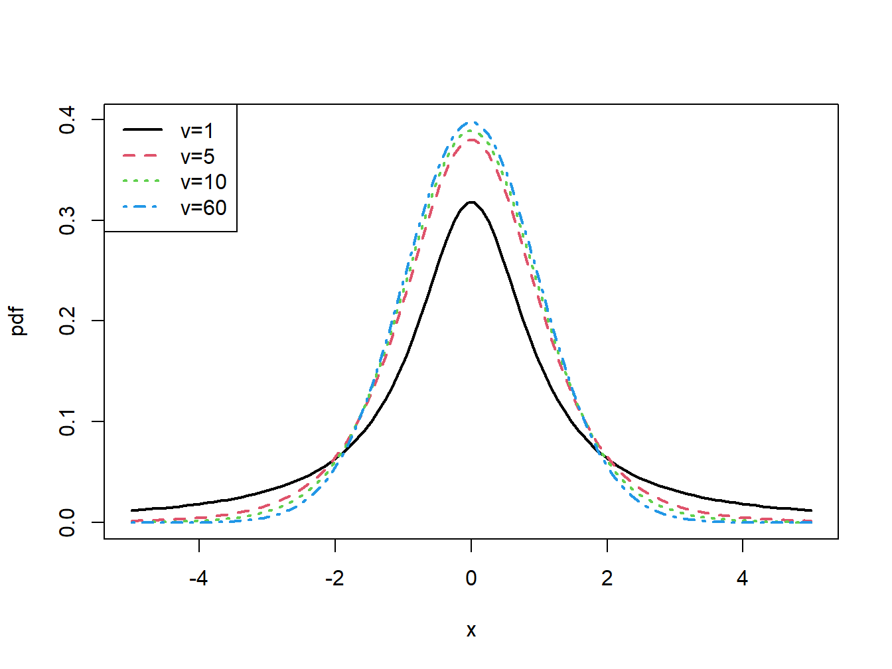
Figure 2.10: Student’s t density with \(v=1,5,10\) and \(60\).
Example 2.32 (Computing tail probabilities and quantiles from the Student’s t distribution) The R functions pt() and qt() can be used to compute the cdf and quantiles of a Student’s t random variable. For \(v=1,2,5,10,60,100\) and \(\infty\) the 1% quantiles can be computed using:
Let \(X\) be a random variable either discrete or continuous with \(E[X]=\mu_{X}\), \(\mathrm{var}(X)=\sigma_{X}^{2}\), and let \(a\) and \(b\) be known constants. Define a new random variable \(Y\) via the linear function of \(X\): \[
Y=g(X)=aX+b.
\] Then the following results hold: \[\begin{align*}
\mu_{Y} & =E[Y]=a\cdot E[X]+b=a\cdot\mu_{X}+b,\\
\sigma_{Y}^{2} & =\mathrm{var}(Y)=a^{2}\mathrm{var}(X)=a^{2}\sigma_{X}^{2},\\
\sigma_{Y} & =\mathrm{sd}(Y)=a\cdot\mathrm{sd}(X)=a\cdot\sigma_{X}.
\end{align*}\] The first result shows that expectation is a linear operation. That is, \[
E[aX+b]=aE[X]+b.
\] The second result shows that adding a constant to \(X\) does not affect its variance, and that the effect of multiplying \(X\) by the constant \(a\) increases the variance of \(X\) by the square of \(a.\) These results will be used often enough that it is instructive to go through the derivations.
Consider the first result. Let \(X\) be a discrete random variable. By the definition of \(E[g(X)]\), with \(g(X)=b+aX\), you can write: \[\begin{align*}
E[Y] & =\sum_{x\in S_{X}}(ax+b)\cdot\Pr(X=x)\\
& =a\sum_{x\in S_{X}}x\cdot\Pr(X=x)+b\sum_{x\in S_{X}}\Pr(X=x)\\
& =a\cdot E[X]+b\cdot1\\
& =a\cdot\mu_{X}+b.
\end{align*}\] If \(X\) is a continuous random variable then by the linearity of integration: \[\begin{align*}
E[Y] & =\int_{-\infty}^{\infty}(ax+b)f(x)~dx=a\int_{-\infty}^{\infty}xf(x)~dx+b\int_{-\infty}^{\infty}f(x)~dx\\
& =aE[X]+b.
\end{align*}\] Next consider the second result. Since \(\mu_{Y}=a\mu_{X}+b\): \[\begin{align*}
\mathrm{var}(Y) & =E[(Y-\mu_{Y})^{2}]\\
& =E[(aX+b-(a\mu_{X}+b))^{2}]\\
& =E[(a(X-\mu_{X})+(b-b))^{2}]\\
& =E[a^{2}(X-\mu_{X})^{2}]\\
& =a^{2}E[(X-\mu_{X})^{2}]\textrm{ (by the linearity of }E[\cdot]\textrm{)}\\
& =a^{2}\mathrm{var}(X)
\end{align*}\] Notice that the derivation of the second result works for discrete and continuous random variables.
A normal random variable has the special property that a linear function of it is also a normal random variable. The following proposition states the result.
Proposition 2.1 (Linear function of a normal random variable) Let \(X\sim N(\mu_{X},\sigma_{X}^{2})\) and let \(a\) and \(b\) be constants. Let \(Y=aX+b\). Then \(Y\sim N(a\mu_{X}+b,a^{2}\sigma_{X}^{2})\).
The above property is special to the normal distribution and may or may not hold for a random variable with a distribution that is not normal.
Example 2.33 (Standardizing a random variable) Let \(X\) be a random variable with \(E[X]=\mu_{X}\) and \(\mathrm{var}(X)=\sigma_{X}^{2}\). Define a new random variable \(Z\) as: \[
Z=\frac{X-\mu_{X}}{\sigma_{X}}=\frac{1}{\sigma_{X}}X-\frac{\mu_{X}}{\sigma_{X}},
\] which is a linear function \(aX+b\) where \(a=\frac{1}{\sigma_{X}}\) and \(b=-\frac{\mu_{X}}{\sigma_{X}}\). This transformation is called standardizing the random variable \(X\) since, \[\begin{align*}
E[Z] & =\frac{1}{\sigma_{X}}E[X]-\frac{\mu_{X}}{\sigma_{X}}=\frac{1}{\sigma_{X}}\mu_{X}-\frac{\mu_{X}}{\sigma_{X}}=0,\\
\mathrm{var}(Z) & =\left(\frac{1}{\sigma_{X}}\right)^{2}\mathrm{var}(X)=\frac{\sigma_{X}^{2}}{\sigma_{X}^{2}}=1.
\end{align*}\] Hence, standardization creates a new random variable with mean zero and variance 1. In addition, if \(X\) is normally distributed then \(Z\sim N(0,1)\). \(\blacksquare\)
Example 2.34 (Computing probabilities using standardized random variables) Let \(X\sim N(2,4)\) and suppose you want to find \(\Pr(X>5)\) but you only know probabilities associated with a standard normal random variable \(Z\sim N(0,1)\). You can solve the problem by standardizing \(X\) as follows: \[
\Pr\left(X>5\right)=\Pr\left(\frac{X-2}{\sqrt{4}}>\frac{5-2}{\sqrt{4}}\right)=\Pr\left(Z>\frac{3}{2}\right)=0.06681.
\]\(\blacksquare\)
Standardizing a random variable is often done in the construction of test statistics. For example, the so-called t-statistic or t-ratio used for testing simple hypotheses on coefficients is constructed by the standardization process.
A non-standard random variable \(X\) with mean \(\mu_{X}\) and variance \(\sigma_{X}^{2}\) can be created from a standard random variable via the linear transformation: \[
X=\mu_{X}+\sigma_{X}\cdot Z.
\tag{2.23}\] This result is useful for modeling purposes as illustrated in the next examples.
Example 2.35 (Quantile of general normal random variable) Let \(X\sim N(\mu_{X},\sigma_{X}^{2})\). Quantiles of \(X\) can be conveniently computed using: \[
q_{\alpha}=\mu_{X}+\sigma_{X}z_{\alpha},
\tag{2.24}\] where \(\alpha\in(0,1)\) and \(z_{\alpha}\) is the \(\alpha\times100\%\) quantile of a standard normal random variable. This formula is derived as follows. By the definition \(z_{\alpha}\) and Equation 2.23\[
\alpha=\Pr(Z\leq z_{\alpha})=\Pr\left(\mu_{X}+\sigma_{X}\cdot Z\leq\mu_{X}+\sigma_{X}\cdot z_{\alpha}\right)=\Pr(X\leq\mu_{X}+\sigma_{X}\cdot z_{\alpha}),
\] which implies Equation 2.24. \(\blacksquare\)
Example 2.36 (Generalized Student’s t distribution) The Student’s t distribution defined in Equation 2.22 has zero mean and variance equal to \(v/(v-2)\) where \(v\) is the degrees of freedom parameter. You can define a Student’s t random variable with non-zero mean \(\mu\) and variance \(\sigma^{2}\) from a Student’s t random variable \(X\) as follows: \[
Y=\mu+\sigma\left(\frac{v-2}{v}\right)^{1/2}X=\mu+\sigma Z_{v},
\] where \(Z_{v}=\left(\frac{v-2}{v}\right)^{1/2}X\). The random variable \(Z_{v}\) is called a standardized Student’s t random variable with \(v\) degrees of freedom since \(E[Z_{v}]=0\) and \(\mathrm{var}(Z_{v})=\left(\frac{v-2}{v}\right)\mathrm{var}(X)=\left(\frac{v-2}{v}\right)\left(\frac{v}{v-2}\right)=1\). Then \[\begin{eqnarray*}
E[Y] & = & \mu+\sigma E[Z]=\mu,\\
\mathrm{var}(Y) & = & \sigma^{2}\mathrm{var}(Z)=\sigma^{2}.
\end{eqnarray*}\]
I use the notation \(Y \sim t_{v}(\mu, \sigma^{2})\) to denote that \(Y\) has a generalized Student’s t distribution with mean \(\mu\), variance \(\sigma^{2}\), and degrees of freedom \(v\). \(\blacksquare\)
Example 2.37 (Location scale return model for asset returns) Let \(r\) denote the monthly continuously compounded return on an asset with \(E[r]=\mu\) and \(\mathrm{var}(R)=\sigma^{2}\). If \(r\) has a normal distribution or a general Student’s t distribution, then \(r\) can be expressed as: \[
r=\mu_{r}+\sigma_{r}\cdot\varepsilon,
\] where \(\varepsilon \sim N(0,1)\) or \(\varepsilon \sim t_{v}(0,1)\). The random variable \(\varepsilon\) can be interpreted as representing the random news arriving in a given month that makes the observed return differ from its expected value \(\mu\). The fact that \(\varepsilon\) has mean zero means that news, on average, is neutral. The value of \(\sigma_{r}\) represents the typical size of a news shock. The bigger is \(\sigma_{r}\), the larger is the impact of a news shock and vice-versa. The distribution of \(\varepsilon\) impacts the likelihood of extreme new events (like stock market crashes). If \(\varepsilon \sim N(0,1)\) then extreme news events are not very likely. If \(\varepsilon \sim t_{v}(0,1)\) with \(v\) small (but bigger than 4) then extreme news events may happen from time-to-time. \(\blacksquare\)
2.1.8 Value-at-Risk: An introduction
As an example of working with linear functions of a normal random variable, and to illustrate the concept of Value-at-Risk (VaR), consider an investment of $10,000 in Microsoft stock over the next month. Let \(R\) denote the monthly simple return on Microsoft stock and assume that \(R\sim N(0.05,(0.10)^{2})\). That is, \(E[R]=\mu_{R}=0.05\) and \(\mathrm{var}(R)=\sigma_{R}^{2}=(0.10)^{2}\). Let \(W_{0}\) denote the investment value at the beginning of the month and \(W_{1}\) denote the investment value at the end of the month. In this example, \(W_{0}=\$10,000\). Consider the following questions:
What is the probability distribution of end-of-month wealth, \(W_{1}?\)
What is the probability that end-of-month wealth is less than $9,000, and what must the return on Microsoft be for this to happen?
What is the loss in dollars that would occur if the return on Microsoft stock is equal to its 5% quantile, \(q_{.05}\)? That is, what is the monthly 5% VaR on the $10,000 investment in Microsoft?
To answer (i), note that end-of-month wealth, \(W_{1}\), is related to initial wealth \(W_{0}\) and the return on Microsoft stock \(R\) via the linear function: \[
W_{1}=W_{0}(1+R)=W_{0}+W_{0}R=\$10,000+\$10,000\cdot R.
\] Using the properties of linear functions of a random variable you get: \[
E[W_{1}]=W_{0}+W_{0}E[R]=\$10,000+\$10,000(0.05)=\$10,500,
\] and, \[\begin{align*}
\mathrm{var}(W_{1}) & =(W_{0})^{2}\mathrm{var}(R)=(\$10,000)^{2}(0.10)^{2},\\
\mathrm{sd}(W_{1}) & =(\$10,000)(0.10)=\$1,000.
\end{align*}\] Further, since \(R\) is assumed to be normally distributed it follows that \(W_{1}\) is normally distributed: \[
W_{1}\sim N(\$10,500,(\$1,000)^{2}).
\] To answer (ii), you can use the above normal distribution for \(W_{1}\) to get: \[
\Pr(W_{1}<\$9,000)=0.067.
\] To find the return that produces end-of-month wealth of $9,000, or a loss of $10,000-$9,000=$1,000, you solve \[
R=\frac{\$9,000-\$10,000}{\$10,000}=-0.10.
\] If the monthly return on Microsoft is -10% or less, then end-of-month wealth will be $9,000 or less. Notice that \(R=-0.10\) is the 6.7% quantile of the distribution of \(R\): \[
\Pr(R<-0.10)=0.067.
\] Question (iii) can be answered in two equivalent ways. First, use \(R\sim N(0.05,(0.10)^{2})\) and solve for the 5% quantile of Microsoft Stock using Equation 2.244: \[\begin{align*}
\Pr(R & <q_{.05}^{R})=0.05\\
& \Rightarrow q_{.05}^{R}=\mu_{R}+\sigma_{R}\cdot z_{.05}=0.05+0.10\cdot(-1.645)=-0.114.
\end{align*}\] That is, with 5% probability the return on Microsoft stock is -11.4% or less. Now, if the return on Microsoft stock is -11.4% the loss in investment value that occurs with 5% probability is \[
\mathrm{VaR}_{0.05} = W_{0}\cdot q_{.05}^{R} = \$10,000\cdot(0.114)= -\$1,144.
\] Since losses are typically reported as positive numbers, \(\mathrm{VaR}_{0.05} = \$1,144\) is the 5% VaR over the next month on the $10,000 investment in Microsoft stock.
For the second method, use \(W_{1}\) ~ \(N(\$10,500,(\$1,000)^{2})\) and solve for the \(5\%\) quantile of end-of-month wealth directly: \[
\Pr(W_{1}<q_{.05}^{W_{1}})=0.05\Rightarrow q_{.05}^{W_{1}}=\$8,856.
\] This corresponds to a loss of investment value of $10,000-$8,856=$1,144. Hence, if \(W_{0}\) represents the initial wealth and \(q_{.05}^{W_{1}}\) is the 5% quantile of the distribution of \(W_{1}\) then the 5% VaR is: \[
\textrm{ VaR}_{.05}=W_{0}-q_{.05}^{W_{1}}=\$10,000-\$8,856=\$1,144.
\]
The following is the usual definition of VaR.
Definition 2.14 (Value-at-Risk) If \(W_{0}\) represents the initial wealth in dollars and \(q_{\alpha}^{R}\) is the \(\alpha\times100\%\) quantile of distribution of the simple return \(R\) for small values of \(\alpha\), then the \(\alpha\times100\)% VaR is defined as: \[
\mathrm{VaR}_{\alpha}=-W_{0}\cdot q_{\alpha}^{R}.
\tag{2.25}\]
In words, VaR\(_{\alpha}\) represents the dollar loss that could occur with probability \(\alpha\). By convention, it is reported as a positive number (hence the multiplication by minus one as \(q_{\alpha}^{R} < 0\) for small values of \(\alpha\)).
2.1.8.1 Value-at-Risk calculations for continuously compounded returns
The above calculations illustrate how to calculate VaR using the normal distribution for simple returns. However, as argued in Example 31, the normal distribution may not be appropriate for characterizing the distribution of simple returns and may be more appropriate for characterizing the distribution of continuously compounded returns. Let \(R\) denote the simple monthly return, let \(r=\ln(1+R)\) denote the continuously compounded return and assume that \(r\sim N(\mu_{r},\sigma_{r}^{2})\). The \(\alpha\times100\%\) monthly VaR on an investment of $\(W_{0}\) is computed using the following steps:
Compute the \(\alpha\cdot100\%\) quantile, \(q_{\alpha}^{r}\), from the normal distribution for the continuously compounded return \(r\): \[
q_{\alpha}^{r}=\mu_{r}+\sigma_{r}z_{\alpha},
\] where \(z_{\alpha}\) is the \(\alpha\cdot100\%\) quantile of the standard normal distribution.
Convert the continuously compounded return quantile, \(q_{\alpha}^{r}\), to a simple return quantile using the transformation: \[
q_{\alpha}^{R}=e^{q_{\alpha}^{r}}-1
\]
Compute VaR using the simple return quantile Equation 2.25.
Step 2 works because quantiles are preserved under monotonically increasing transformations of random variables.
Example 2.38 (Computing VaR from simple and continuously compounded returns using R) Let \(R\) denote the simple monthly return on Microsoft stock and assume that \(R\sim N(0.05,(0.10)^{2})\). Consider an initial investment of \(W_{0}=\$10,000\). To compute the 1% and 5% VaR values over the next month use:
Hence with 1% and 5% probability the loss over the next month is at least $1,826 and $1,145, respectively.
Let \(r\) denote the continuously compounded return on Microsoft stock and assume that \(r\sim N(0.05,(0.10)^{2})\). To compute the 1% and 5% VaR values over the next month use:
Notice that when \(1+R=e^{r}\) has a log-normal distribution, the 1% and 5% VaR values (losses) are slightly smaller than when \(R\) is normally distributed. This is due to the positive skewness of the log-normal distribution. \(\blacksquare\)
2.2 Bivariate Distributions
So far I have only considered probability distributions for a single random variable. In many situations, you want to be able to characterize the probabilistic behavior of two or more random variables simultaneously. For example, you might want to know about the probabilistic behavior of the returns on a two asset portfolio. In this section, I discuss bivariate distributions and important concepts related to the analysis of two random variables.
2.2.1 Discrete random variables
Let \(X\) and \(Y\) be discrete random variables with sample spaces \(S_{X}\) and \(S_{Y}\), respectively. The likelihood that \(X\) and \(Y\) takes values in the joint sample space \(S_{XY}=S_{X}\times S_{Y}\) (Cartesian product of the individual sample spaces) is determined by the joint probability distribution\(p(x,y)=\Pr(X=x,Y=y).\) The function \(p(x,y)\) satisfies:
Example 2.39 (Bivariate discrete distribution for stock returns) Let \(X\) denote the monthly return (in percent) on Microsoft stock and let \(Y\) denote the monthly return on Starbucks stock. For simplicity suppose that the sample spaces for \(X\) and \(Y\) are \(S_{X}=\{0,1,2,3\}\) and \(S_{Y}=\{0,1\}\) so that the random variables \(X\) and \(Y\) are discrete. The joint sample space is the two dimensional grid \(S_{XY}=\{(0,0)\), \((0,1)\), \((1,0)\), \((1,1)\), \((2,0)\), \((2,1)\), \((3,0)\), \((3,1)\}\). Table Table 2.3 illustrates the joint distribution for \(X\) and \(Y\). From the table, \(p(0,0)=\Pr(X=0,Y=0)=1/8\). Notice that the sum of all the entries in the table sum to unity. \(\blacksquare\)
Table 2.3: Discrete bivariate distribution for Microsoft and Starbucks stock prices.
Y
%
0
1
\(\Pr(X)\)
0
1/8
0
1/8
X
1
2/8
1/8
3/8
2
1/8
2/8
3/8
3
0
1/8
1/8
\(\Pr(Y)\)
4/8
4/8
1
2.2.1.1 Marginal Distributions
The joint probability distribution tells us the probability of \(X\) and \(Y\) occurring together. What if you only want to know about the probability of \(X\) occurring, or the probability of \(Y\) occurring?
Example 2.40 (Find \(\Pr(X=0)\) and \(\Pr(Y=1)\) from joint distribution) Consider the joint distribution in Table Table 2.3. What is \(\Pr(X=0)\) regardless of the value of \(Y\)? Now \(X\) can occur if \(Y=0\) or if \(Y=1\) and since these two events are mutually exclusive you get: \[
\Pr(X=0)=\Pr(X=0,Y=0)+\Pr(X=0,Y=1)=0+1/8=1/8.
\] Notice that this probability is equal to the horizontal (row) sum of the probabilities in the table at \(X=0\). You can find \(\Pr(Y=1)\) in a similar fashion: \[\begin{align*}
\Pr(Y=1)&=\Pr(X=0,Y=1)+\Pr(X=1,Y=1)+\Pr(X=2,Y=1)+\Pr(X=3,Y=1)\\
&=0+1/8+2/8+1/8=4/8.
\end{align*}\] This probability is the vertical (column) sum of the probabilities in the table at \(Y=1\). \(\blacksquare\)
Definition 2.15 (Marginal distribution) The probability \(\Pr(X=x)\) is called the marginal probability of \(X\) and is given by: \[
\Pr(X=x)=\sum_{y\in S_{Y}}\Pr(X=x,Y=y).
\tag{2.26}\] Similarly, the marginal probability of \(Y=y\) is given by: \[
\Pr(Y=y)=\sum_{x\in S_{X}}\Pr(X=x,Y=y).
\tag{2.27}\]
Example 2.41 (Marginal probabilities of discrete bivariate distribution) The marginal probabilities of \(X=x\) are given in the last column of Table Table 2.3, and the marginal probabilities of \(Y=y\) are given in the last row of Table Table 2.3. Notice that these probabilities sum to 1. For future reference, note that \(E[X]=3/2,\mathrm{var}(X)=3/4,E[Y]=1/2\), and \(\mathrm{var}(Y)=1/4\). \(\blacksquare\)
2.2.1.2 Conditional Distributions
For random variables in Table Table 2.3, suppose you know that the random variable \(Y\) takes on the value \(Y=0\). How does this knowledge affect the likelihood that \(X\) takes on the values 0, 1, 2 or 3? For example, what is the probability that \(X=0\)given that you know \(Y=0\)? To find this probability, you can use Bayes’ law and compute the conditional probability: \[
\Pr(X=0|Y=0)=\frac{\Pr(X=0,Y=0)}{\Pr(Y=0)}=\frac{1/8}{4/8}=1/4.
\] The notation \(\Pr(X=0|Y=0)\) is read as “the probability that \(X=0\) given that \(Y=0\)” . Notice that \(\Pr(X=0|Y=0)=1/4>\Pr(X=0)=1/8\). Hence, knowledge that \(Y=0\) increases the likelihood that \(X=0\). Clearly, \(X\)depends on \(Y\).
Now suppose that you know that \(X=0\). How does this knowledge affect the probability that \(Y=0?\) To find out compute: \[
\Pr(Y=0|X=0)=\frac{\Pr(X=0,Y=0)}{\Pr(X=0)}=\frac{1/8}{1/8}=1.
\] Notice that \(\Pr(Y=0|X=0)=1>\Pr(Y=0)=1/2\). That is, knowledge that \(X=0\) makes it certain that \(Y=0\).
The conditional probability that \(X=x\) given that \(Y=y\) (provided \(\Pr(Y=y)\neq0)\) is, \[
p(x|y) = \Pr(X=x|Y=y)=\frac{\Pr(X=x,Y=y)}{\Pr(Y=y)} = \frac{p(x,y)}{p(y)},
\tag{2.28}\] and the conditional probability that \(Y=y\) given that \(X=x\) (provided \(\Pr(X=x)\neq0\)) is, \[
p(y|x) = \Pr(Y=y|X=x)=\frac{\Pr(X=x,Y=y)}{\Pr(X=x)} = \frac{p(x,y)}{p(x)}.
\tag{2.29}\]
Example 2.42 (Conditional distributions) For the bivariate distribution in Table Table 2.3, the conditional probabilities along with marginal probabilities are summarized in Tables Table 2.4 and Table 2.5. Notice that the marginal distribution of \(X\) is centered at \(x=3/2\) whereas the conditional distribution of \(X|Y=0\) is centered at \(x=1\) and the conditional distribution of \(X|Y=1\) is centered at \(x=2\). \(\blacksquare\)
Table 2.4: Conditional probability distribution of X from bivariate discrete distribution.
x
\(\Pr(X=x)\)
\(\Pr(X|Y=0)\)
\(\Pr(X|Y=1)\)
0
1/8
2/8
0
1
3/8
4/8
2/8
2
3/8
4/8
4/8
3
1/8
0
2/8
Table 2.5: Conditional distribution of Y from bivariate discrete distribution.
y
\(\Pr(Y=y)\)
\(\Pr(Y|X=0)\)
\(\Pr(Y|X=1)\)
\(\Pr(Y|X=2)\)
\(\Pr(Y|X=3)\)
0
1/2
1
2/3
1/3
0
1
1/2
0
1/3
2/3
1
2.2.1.3 Conditional expectation and conditional variance
Just as I defined shape characteristics of the marginal distributions of \(X\) and \(Y\), I can also define shape characteristics of the conditional distributions of \(X|Y=y\) and \(Y|X=x\). The most important shape characteristics are the conditional expectation (conditional mean) and the conditional variance. The conditional mean of \(X|Y=y\) is denoted by \(\mu_{X|Y=y}=E[X|Y=y]\), and the conditional mean of \(Y|X=x\) is denoted by \(\mu_{Y|X=x}=E[Y|X=x]\).
Definition 2.16 (Conditional expectation) For discrete random variables \(X\) and \(Y\), the conditional expectations are defined as: \[\begin{align}
\mu_{X|Y=y} & =E[X|Y=y]=\sum_{x\in S_{X}}x\cdot\Pr(X=x|Y=y),\\
\mu_{Y|X=x} & =E[Y|X=x]=\sum_{y\in S_{Y}}y\cdot\Pr(Y=y|X=x).
\end{align}\]
Similarly, the conditional variance of \(X|Y=y\) is denoted by \(\sigma_{X|Y=y}^{2}=\mathrm{var}(X|Y=y)\) and the conditional variance of \(Y|X=x\) is denoted by \(\sigma_{Y|X=x}^{2}=\mathrm{var}(Y|X=x)\).
Definition 2.17 (Conditional variance) For discrete random variables \(X\) and \(Y\), the conditional variances are defined as: \[\begin{align}
\sigma_{X|Y=y}^{2} & =\mathrm{var}(X|Y=y)=\sum_{x\in S_{X}}(x-\mu_{X|Y=y})^{2}\cdot\Pr(X=x|Y=y),\\
\sigma_{Y|X=x}^{2} & =\mathrm{var}(Y|X=x)=\sum_{y\in S_{Y}}(y-\mu_{Y|X=x})^{2}\cdot\Pr(Y=y|X=x).
\end{align}\] The conditional volatilities are defined as: \[\begin{align}
\sigma_{X|Y=y} & = \sqrt{\sigma_{X|Y=y}^{2}}, \\
\sigma_{Y|X=x} & = \sqrt{\sigma_{Y|X=x}^{2}}.
\end{align}\]
Then conditional mean is the center of mass of the conditional distribution, and the conditional variance and volatility measure the spread of the conditional distribution about the conditional mean.
Example 2.43 (Compute conditional expectation and conditional variance) For the random variables in Table Table 2.3, you can derive the following conditional moments for \(X\): \[\begin{align*}
E[X|Y & =0]=0\cdot1/4+1\cdot1/2+2\cdot1/4+3\cdot0=1,\\
E[X|Y & =1]=0\cdot0+1\cdot1/4+2\cdot1/2+3\cdot1/4=2,\\
\mathrm{var}(X|Y & =0)=(0-1)^{2}\cdot1/4+(1-1)^{2}\cdot1/2+(2-1)^{2}\cdot1/2+(3-1)^{2}\cdot0=1/2,\\
\mathrm{var}(X|Y & =1)=(0-2)^{2}\cdot0+(1-2)^{2}\cdot1/4+(2-2)^{2}\cdot1/2+(3-2)^{2}\cdot1/4=1/2.
\end{align*}\] Compare these values to \(E[X]=3/2\) and \(\mathrm{var}(X)=3/4\). Notice that \(\mathrm{var}(X|Y) = 1/2 < \mathrm{var}(X)=3/4\) so that conditioning on information reduces variability. Also, notice that as \(y\) increases, \(E[X|Y=y]\) increases.
For \(Y\), similar calculations gives: \[\begin{align*}
E[Y|X & =0]=0,E[Y|X=1]=1/3,E[Y|X=2]=2/3,E[Y|X=3]=1,\\
\mathrm{var}(Y|X & =0)=0,\mathrm{var}(Y|X=1)=0.2222,\mathrm{var}(Y|X=2)=0.2222,\mathrm{var}(Y|X=3)=0.
\end{align*}\] Compare these values to \(E[Y]=1/2\) and \(\mathrm{var}(Y)=1/4\). Notice that as \(x\) increases \(E[Y|X=x]\) increases. \(\blacksquare\)
2.2.1.4 Conditional expectation and the regression function
Consider the problem of predicting the value \(Y\) given that you know \(X=x\). A natural predictor to use is the conditional expectation \(E[Y|X=x]\). In this prediction context, the conditional expectation \(E[Y|X=x]\) is called the regression function. The graph with \(E[Y|X=x]\) on the vertical axis and \(x\) on the horizontal axis gives the regression line. The relationship between \(Y\) and the regression function may be expressed using the trivial identity: \[
\begin{aligned}
Y & =E[Y|X=x]+Y-E[Y|X=x]\nonumber \\
& =E[Y|X=x]+\varepsilon,
\end{aligned}
\tag{2.30}\] where \(\varepsilon=Y-E[Y|X]\) is called the regression error.
Example 2.44 (Regression line for bivariate discrete distribution) For the random variables in Table Table 2.3, the regression line is plotted in Figure Figure 2.11. Notice that there is a linear relationship between \(E[Y|X=x]\) and \(x\). When such a linear relationship exists you call the regression function a linear regression. Linearity of the regression function, however, is not guaranteed. It may be the case that there is a non-linear (e.g., quadratic) relationship between \(E[Y|X=x]\) and \(x\). In this case, you call the regression function a non-linear regression. \(\blacksquare\)
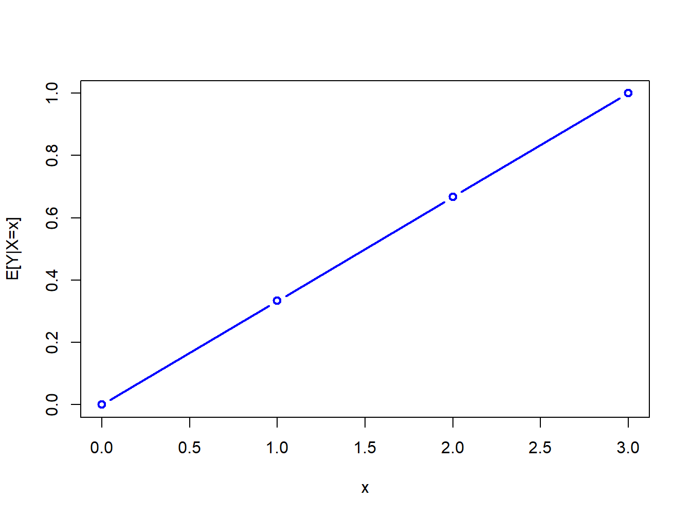
Figure 2.11: Regression function \(E[Y|X=x]\) from discrete bivariate distribution.
2.2.1.5 Law of Total Expectations
Before \(Y\) is observed, \(E[X|Y]\) is a random variable because its value depends on the value of \(Y\) which is a random variable. Similarly, \(E[Y|X]\) is also a random variable. Since \(E[X|Y]\) and \(E[Y|X]\) are random variables you can consider their mean values. To illustrate, for the random variables in Table Table 2.3 notice that: \[\begin{align*}
E[X] & = \sum_{y \in S_{Y}} E[X|Y=y]\cdot \Pr(Y=y)\\
& =E[X|Y=0]\cdot\Pr(Y=0)+E[X|Y=1]\cdot\Pr(Y=1)\\
& =1\cdot1/2+2\cdot1/2=3/2,
\end{align*}\] and, \[\begin{align*}
E[Y] & = \sum_{x \in S_{X}} E[Y|X=x]\cdot \Pr(X=x)\\
& =E[Y|X=0]\cdot\Pr(X=0)+E[Y|X=1]\cdot\Pr(X=1)\\
+E[Y|X & =2]\cdot\Pr(X=2)+E[Y|X=3]\cdot\Pr(X=3)=1/2.
\end{align*}\] This result is known as the law of iterated expectations or the law of total expectations.
Proposition 2.2 For two random variables \(X\) and \(Y\) (discrete or continuous) it can be shown that: \[
\begin{aligned}
E[X] & =E[E[X|Y]],\\
E[Y] & =E[E[Y|X]],\nonumber
\end{aligned}
\tag{2.31}\] where the expectation on the first line is taken with respect to the random variable \(Y\), and the the expectation on the second line is taken with respect to the random variable \(X\).
In words, the law of iterated expectations says that the mean of the conditional mean is the unconditional mean.
2.2.2 Bivariate distributions for continuous random variables
Let \(X\) and \(Y\) be continuous random variables defined over the real line. You can characterize the joint probability distribution of \(X\) and \(Y\) using the joint probability function (pdf) \(f(x,y)\) such that \(f(x,y)\geq0\) and, \[
\int_{-\infty}^{\infty}\int_{-\infty}^{\infty}f(x,y)~dx~dy=1.
\] The three-dimensional plot of the joint probability distribution gives a probability surface whose total volume is unity. To compute joint probabilities of \(x_{1}\leq X\leq x_{2}\) and \(y_{1}\leq Y\leq y_{2},\) you need to find the volume under the probability surface over the grid where the intervals \([x_{1},x_{2}]\) and \([y_{1},y_{2}]\) overlap. Finding this volume requries solving the double integral: \[
\Pr(x_{1}\leq X\leq x_{2},y_{1}\leq Y\leq y_{2})=\int_{x_{1}}^{x_{2}}\int_{y_{1}}^{y_{2}}f(x,y)~dx~dy.
\]
Example 2.45 (Standard bivariate normal distribution) A standard bivariate normal pdf for \(X\) and \(Y\) has the form: \[
f(x,y)=\frac{1}{2\pi}e^{-\frac{1}{2}(x^{2}+y^{2})},~-\infty\leq x,~y\leq\infty
\tag{2.32}\] and has the shape of a symmetric bell (think Liberty Bell) centered at \(x=0\) and \(y=0\). To find \(\Pr(-1<X<1,-1<Y<1)\) you must solve: \[
\int_{-1}^{1}\int_{-1}^{1}\frac{1}{2\pi}e^{-\frac{1}{2}(x^{2}+y^{2})}~dx~dy,
\] which, unfortunately, does not have an analytical solution. Numerical approximation methods are required to evaluate the above integral. The function pmvnorm() in the R package mvtnorm can be used to evaluate areas under the bivariate standard normal surface. To compute \(\Pr(-1<X<1,-1<Y<1)\) use:
Here, \(\Pr(-1<X<1,-1<Y<1)=0.4661\). The attribute error gives the estimated absolute error of the approximation, and the attribute message tells the status of the algorithm used for the approximation. See the online help for pmvnorm for more details. \(\blacksquare\)
2.2.2.1 Marginal and conditional distributions
The marginal pdf of \(X\) is found by integrating \(y\) out of the joint pdf \(f(x,y)\) and the marginal pdf of \(Y\) is found by integrating \(x\) out of the joint pdf \(f(x,y)\): \[
f(x)=\int_{-\infty}^{\infty}f(x,y)~dy,
\tag{2.33}\]
The conditional pdf of \(X\) given that \(Y=y\), denoted \(f(x|y)\), is computed as \[
f(x|y)=\frac{f(x,y)}{f(y)},
\tag{2.35}\] and the conditional pdf of \(Y\) given that \(X=x\) is computed as, \[
f(y|x)=\frac{f(x,y)}{f(x)}.
\tag{2.36}\] The conditional means are computed as \[\begin{align}
\mu_{X|Y=y} & =E[X|Y=y]=\int x\cdot p(x|y)~dx,\\
\mu_{Y|X=x} & =E[Y|X=x]=\int y\cdot p(y|x)~dy,
\end{align}\] and the conditional variances are computed as, \[\begin{align}
\sigma_{X|Y=y}^{2} & =\mathrm{var}(X|Y=y)=\int(x-\mu_{X|Y=y})^{2}p(x|y)~dx,\\
\sigma_{Y|X=x}^{2} & =\mathrm{var}(Y|X=x)=\int(y-\mu_{Y|X=x})^{2}p(y|x)~dy.
\end{align}\]
Example 2.46 (Conditional and marginal distributions from bivariate standard normal) Suppose \(X\) and \(Y\) are distributed bivariate standard normal. To find the marginal distribution of \(X\) you use Equation 2.33 and solve: \[
f(x)=\int_{-\infty}^{\infty}\frac{1}{2\pi}e^{-\frac{1}{2}(x^{2}+y^{2})}~dy=\frac{1}{\sqrt{2\pi}}e^{-\frac{1}{2}x^{2}}\int_{-\infty}^{\infty}\frac{1}{\sqrt{2\pi}}e^{-\frac{1}{2}y^{2}}~dy=\frac{1}{\sqrt{2\pi}}e^{-\frac{1}{2}x^{2}}.
\] Hence, the marginal distribution of \(X\) is standard normal. Similiar calculations show that the marginal distribution of \(Y\) is also standard normal. To find the conditional distribution of \(X|Y=y\) use Equation 2.35 and solve: \[\begin{align*}
f(x|y) & =\frac{f(x,y)}{f(x)}=\frac{\frac{1}{2\pi}e^{-\frac{1}{2}(x^{2}+y^{2})}}{\frac{1}{\sqrt{2\pi}}e^{-\frac{1}{2}y^{2}}}\\
& =\frac{1}{\sqrt{2\pi}}e^{-\frac{1}{2}(x^{2}+y^{2})+\frac{1}{2}y^{2}}\\
& =\frac{1}{\sqrt{2\pi}}e^{-\frac{1}{2}x^{2}}\\
& =f(x)
\end{align*}\] So, for the standard bivariate normal distribution \(f(x|y)=f(x)\) which does not depend on \(y\). Similar calculations show that \(f(y|x)=f(y)\). \(\blacksquare\)
2.2.3 Independence
Let \(X\) and \(Y\) be two discrete random variables. Intuitively, \(X\) is independent of \(Y\) if knowledge about \(Y\) does not influence the likelihood that \(X=x\) for all possible values of \(x\in S_{X}\) and \(y\in S_{Y}\). Similarly, \(Y\) is independent of \(X\) if knowledge about \(X\) does not influence the likelihood that \(Y=y\) for all values of \(y\in S_{Y}\). I represent this intuition formally for discrete random variables as follows.
Definition 2.18 (Independence of discrete random variables) Let \(X\) and \(Y\) be discrete random variables with sample spaces \(S_{X}\) and \(S_{Y}\), respectively. \(X\) and \(Y\) are independent random variables if and only if (iff): \[\begin{align*}
\Pr(X & =x|Y=y)=\Pr(X=x),\textrm{ for all }x\in S_{X},y\in S_{Y}\\
\Pr(Y & =y|X=x)=\Pr(Y=y),\textrm{ for all }x\in S_{X},y\in S_{Y}
\end{align*}\]
Example 2.47 (Check independence of bivariate discrete random variables) For the data in Table Table 2.3, you know that \(\Pr(X=0|Y=0)=1/4\neq\Pr(X=0)=1/8\) so \(X\) and \(Y\) are not independent. \(\blacksquare\)
Proposition 2.3 (Independence of discrete random variables) Let \(X\) and \(Y\) be discrete random variables with sample spaces \(S_{X}\) and \(S_{Y}\), respectively. \(X\) and \(Y\) are independent iff: \[
\Pr(X=x,Y=y)=\Pr(X=x)\cdot\Pr(Y=y),\textrm{ for all }x\in S_{X},y\in S_{Y}.
\]
Intuition for the above result follows from: \[\begin{align*}
\Pr(X & =x|Y=y)&=\frac{\Pr(X=x,Y=y)}{\Pr(Y=y)}=\frac{\Pr(X=x)\cdot\Pr(Y=y)}{\Pr(Y=y)}\\
&=\Pr(X=x),\\
\Pr(Y & =y|X=x)&=\frac{\Pr(X=x,Y=y)}{\Pr(X=x)}=\frac{\Pr(X=x)\cdot\Pr(Y=y)}{\Pr(X=x)}\\
& =\Pr(Y=y),
\end{align*}\] which shows that \(X\) and \(Y\) are independent.
For continuous random variables, you have the following definition of independence.
Definition 2.19 (Independence of continuous random variables) Let \(X\) and \(Y\) be continuous random variables with marginal pdfs \(f(x)\) and \(f(y)\), and conditional pdfs \(f(x|y)\) and \(f(y|x)\). Then \(X\) and \(Y\) are independent iff: \[\begin{align*}
f(x|y) & =f(x),\textrm{ for }-\infty<x,y<\infty,\\
f(y|x) & =f(y),\textrm{ for }-\infty<x,y<\infty.
\end{align*}\]
As with discrete random variables, you have the following result for continuous random variables.
Proposition 2.4 (Independence of continuous random variables) Let \(X\) and \(Y\) be continuous random variables with marginal pdfs \(f(x)\) and \(f(y)\), and joint pdf \(f(x,y)\). Then \(X\) and \(Y\) are independent iff: \[
f(x,y)=f(x)f(y)
\]
This result is extremely useful in practice because it gives us an easy way to compute the joint pdf for two independent random variables: you simply compute the product of the marginal distributions.
Example 2.48 (Constructing the bivariate standard normal distribution) Let \(X\sim N(0,1)\), \(Y\sim N(0,1)\) and let \(X\) and \(Y\) be independent. Then, \[
f(x,y)=f(x)f(y)=\frac{1}{\sqrt{2\pi}}e^{-\frac{1}{2}x^{2}}\frac{1}{\sqrt{2\pi}}e^{-\frac{1}{2}y^{2}}=\frac{1}{2\pi}e^{-\frac{1}{2}(x^{2}+y^{2})}.
\] This result is a special case of the general bivariate normal distribution to be discussed in the next sub-section. \(\blacksquare\)
A useful property of the independence between two random variables is the following Proposition.
Proposition 2.5 (Property of independent random variables) If \(X\) and \(Y\) are independent then \(g(X)\) and \(h(Y)\) are independent for any functions \(g(\cdot)\) and \(h(\cdot)\).
For example, if \(X\) and \(Y\) are independent then \(X^{2}\) and \(Y^{2}\) are also independent.
2.2.4 Covariance and correlation
Let \(X\) and \(Y\) be two discrete random variables. Figure Figure 2.12 displays several bivariate probability scatterplots (where equal probabilities are given on the dots). In panel (a) you see no linear relationship between \(X\) and \(Y\). In panel (b) you see a perfect positive linear relationship between \(X\) and \(Y\) and in panel (c) you see a perfect negative linear relationship. In panel (d) you see a positive, but not perfect, linear relationship; in panel (e) you see a negative, but not perfect, linear relationship. Finally, in panel (f) you see no systematic linear relationship but you see a strong nonlinear (parabolic) relationship. The covariance between \(X\) and \(Y\) measures the direction of the linear relationship between the two random variables. The correlation between \(X\) and \(Y\) measures the direction and the strength of the linear relationship between the two random variables.
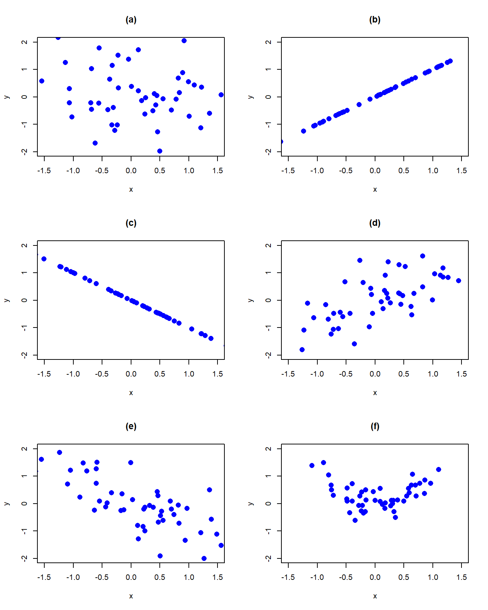
Figure 2.12: Probability scatterplots illustrating dependence between \(X\) and \(Y\).
Let \(X\) and \(Y\) be two random variables with \(E[X]=\mu_{X}\), \(\mathrm{var}(X)=\sigma_{X}^{2},E[Y]=\mu_{Y}\) and \(\mathrm{var}(Y)=\sigma_{Y}^{2}\).
Definition 2.20 (Covariance) The covariance between two random variables X and Y is given by: \[\begin{align*}
\sigma_{XY} & =\mathrm{cov}(X,Y)=E[(X-\mu_{X})(Y-\mu_{Y})]\\
& =\sum_{x\in S_{X}}\sum_{y\in S_{Y}}(x-\mu_{X})(y-\mu_{Y})\Pr(X=x,Y=y)\textrm{ for discrete } X, Y ,\\
& =\int_{-\infty}^{\infty}\int_{-\infty}^{\infty}(x-\mu_{X})(y-\mu_{Y})p(x,y)~dx~dy\textrm{ for continuous } X, Y.
\end{align*}\]
Definition 2.21 (Correlation) The correlation between two random variables X and Y is given by: \[
\rho_{XY}=\mathrm{cor}(X,Y)=\frac{\mathrm{cov}(X,Y)}{\sqrt{\mathrm{var}(X)\mathrm{var}(Y)}}=\frac{\sigma_{XY}}{\sigma_{X}\sigma_{Y}}.
\] The correlation coefficient, \(\rho_{XY}\), is a scaled version of the covariance.
To see how covariance measures the direction of linear association, consider the probability scatterplot in Figure Figure 2.13. In the figure, each pair of points occurs with equal probability. The plot is separated into quadrants (right to left, top to bottom). In the first quadrant (black circles), the realized values satisfy \(x<\mu_{X},y>\mu_{Y}\) so that the product \((x-\mu_{X})(y-\mu_{Y})<0\). In the second quadrant (blue squares), the values satisfy \(x>\mu_{X}\) and \(y>\mu_{Y}\) so that the product \((x-\mu_{X})(y-\mu_{Y})>0\). In the third quadrant (red triangles), the values satisfy \(x<\mu_{X}\) and \(y<\mu_{Y}\) so that the product \((x-\mu_{X})(y-\mu_{Y})>0\). Finally, in the fourth quadrant (green diamonds), \(x>\mu_{X}\) but \(y<\mu_{Y}\) so that the product \((x-\mu_{X})(y-\mu_{Y})<0\). Covariance is then a probability weighted average all of the product terms in the four quadrants. For the values in Figure Figure 2.13, this weighted average is positive because most of the values are in the second and third quadrants.
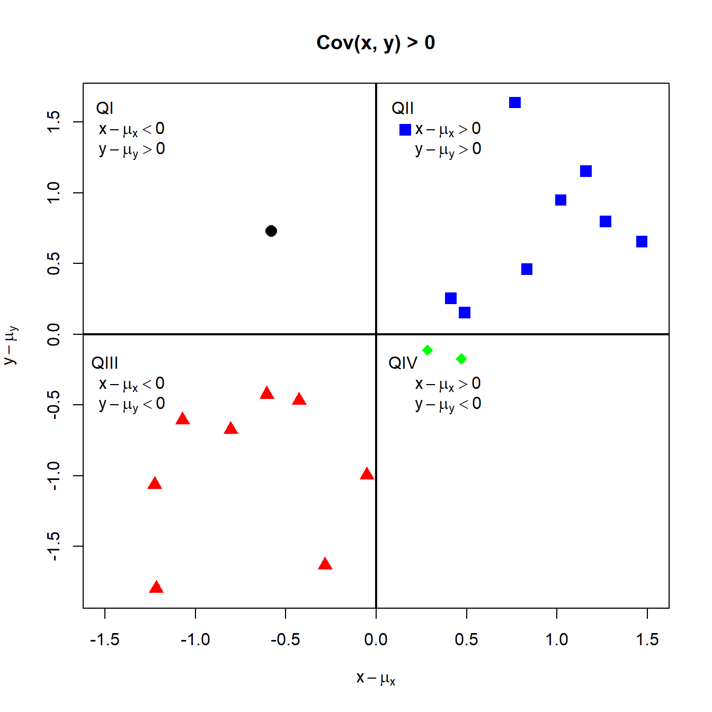
Figure 2.13: Probability scatterplot of discrete distribution with positive covariance. Each pair \((X,Y)\) occurs with equal probability.
Example 2.49 (Calculate covariance and correlation for discrete random variables) For the data in Table Table 2.3, you get: \[\begin{gather*}
\sigma_{XY}=\mathrm{cov}(X,Y)=(0-3/2)(0-1/2)\cdot1/8+(0-3/2)(1-1/2)\cdot0\\
+\cdots+(3-3/2)(1-1/2)\cdot1/8=1/4\\
\rho_{XY}=\mathrm{cor}(X,Y)=\frac{1/4}{\sqrt{(3/4)\cdot(1/2)}}=0.577
\end{gather*}\]
\(\blacksquare\)
2.2.4.1 Properties of covariance and correlation
Let \(X\) and \(Y\) be random variables and let \(a\) and \(b\) be constants. Some important properties of \(\mathrm{cov}(X,Y)\) are summarized in the following Proposition:
If \(X\) and \(Y\) are independent then \(\mathrm{cov}(X,Y)=0\) (no association \(\Longrightarrow\) no linear association). However, if \(\mathrm{cov}(X,Y)=0\) then \(X\) and \(Y\) are not necessarily independent (no linear association \(\nRightarrow\) no association).
If \(X\) and \(Y\) are jointly normally distributed and \(\mathrm{cov}(X,Y)=0\), then \(X\) and \(Y\) are independent.
The first two properties are intuitive. The third property results from expanding the definition of covariance: \[\begin{align*}
\mathrm{cov}(X,Y) & =E[(X-\mu_{X})(Y-\mu_{Y})]\\
& =E\left[XY-X\mu_{Y}-\mu_{X}Y+\mu_{X}\mu_{Y}\right]\\
& =E[XY]-E[X]\mu_{Y}-\mu_{X}E[Y]+\mu_{X}\mu_{Y}\\
& =E[XY]-2\mu_{X}\mu_{Y}+\mu_{X}\mu_{Y}\\
& =E[XY]-\mu_{X}\mu_{Y}
\end{align*}\] The fourth property follows from the linearity of expectations: \[\begin{align*}
\mathrm{cov}(aX,bY) & =E[(aX-a\mu_{X})(bY-b\mu_{Y})]\\
& =a\cdot b\cdot E[(X-\mu_{X})(Y-\mu_{Y})]\\
& =a\cdot b\cdot\mathrm{cov}(X,Y)
\end{align*}\] The fourth property shows that the value of \(\mathrm{cov}(X,Y)\) depends on the scaling of the random variables \(X\) and \(Y\). By simply changing the scale of \(X\) or \(Y\) you can make \(\mathrm{cov}(X,Y)\) equal to any value that you want. Consequently, the numerical value of \(\mathrm{cov}(X,Y)\) is not informative about the strength of the linear association between \(X\) and \(Y\). However, the sign of \(\mathrm{cov}(X,Y)\) is informative about the direction of linear association between \(X\) and \(Y\).
The fifth property should be intuitive. Independence between the random variables \(X\) and \(Y\) means that there is no relationship, linear or nonlinear, between \(X\) and \(Y\). However, the lack of a linear relationship between \(X\) and \(Y\) does not preclude a nonlinear relationship.
The last result illustrates an important property of the normal distribution: lack of covariance implies independence.
Some important properties of \(\mathrm{cor}(X,Y)\) are:
Proposition 2.7
\(-1\leq\rho_{XY}\leq1\)
If \(\rho_{XY}=1\) then \(X\) and \(Y\) are perfectly positively linearly related. That is, \(Y=aX+b\) where \(a>0\).
If \(\rho_{XY}=-1\) then \(X\) and \(Y\) are perfectly negatively linearly related. That is, \(Y=aX+b\) where \(a<0\).
If \(\rho_{XY}=0\) then \(X\) and \(Y\) are not linearly related but may be nonlinearly related.
\(\mathrm{cor}(aX,bY)=\mathrm{cor}(X,Y)\) if \(a>0\) and \(b>0\); \(\mathrm{cor}(X,Y)=-\mathrm{cor}(X,Y)\) if \(a>0,b<0\) or \(a<0,b>0\).
TBD: discuss the results briefly
2.2.5 Bivariate normal distributions
Let \(X\) and \(Y\) be distributed bivariate normal. The joint pdf is given by: \[
\begin{aligned}
&f(x,y)=\frac{1}{2\pi\sigma_{X}\sigma_{Y}\sqrt{1-\rho_{XY}^{2}}}\times\\
&\exp\left\{ -\frac{1}{2(1-\rho_{XY}^{2})}\left[\left(\frac{x-\mu_{X}}{\sigma_{X}}\right)^{2}+\left(\frac{y-\mu_{Y}}{\sigma_{Y}}\right)^{2}-\frac{2\rho_{XY}(x-\mu_{X})(y-\mu_{Y})}{\sigma_{X}\sigma_{Y}}\right]\right\} \nonumber
\end{aligned}
\tag{2.37}\] where \(E[X]=\mu_{X}\), \(E[Y]=\mu_{Y}\), \(\mathrm{sd}(X)=\sigma_{X}\), \(\mathrm{sd}(Y)=\sigma_{Y}\), and \(\rho_{XY}=\mathrm{cor}(X,Y)\). The correlation coefficient \(\rho_{XY}\) describes the dependence between \(X\) and \(Y\). If \(\rho_{XY}=0\) then the pdf collapses to the pdf of the standard bivariate normal distribution. In this case, \(X\) and \(Y\) are independent random variables since \(f(x,y)=f(x)f(y).\)
It can be shown that the marginal distributions of \(X\) and \(Y\) are normal: \(X\sim N(\mu_{X},\sigma_{X}^{2})\), \(Y\sim N(\mu_{Y},\sigma_{Y}^{2})\). In addition, it can be shown that the conditional distributions \(f(x|y)\) and \(f(y|x)\) are also normal with means given by: \[\begin{align*}
\mu_{X|Y=y} & =\alpha_{X}+\beta_{X}\cdot y,\\
\mu_{Y|X=x} & =\alpha_{Y}+\beta_{Y}\cdot x,
\end{align*}\] where, \[\begin{align*}
\alpha_{X} & =\mu_{X}-\beta_{X}\mu_{X},~\beta_{X}=\sigma_{XY}/\sigma_{Y}^{2},\\
\alpha_{Y} & =\mu_{Y}-\beta_{Y}\mu_{X},~\beta_{Y}=\sigma_{XY}/\sigma_{X}^{2},
\end{align*}\] and variances given by, \[\begin{align*}
\sigma_{X|Y=y}^{2} & =\sigma_{X}^{2}-\sigma_{XY}^{2}/\sigma_{Y}^{2},\\
\sigma_{X|Y=y}^{2} & =\sigma_{Y}^{2}-\sigma_{XY}^{2}/\sigma_{X}^{2}.
\end{align*}\] Notice that the conditional means (regression functions) are linear functions of \(x\) and \(y\), respectively.
Example 2.50 (Expressing the bivariate normal distribution using matrix algebra) The formula for the bivariate normal distribution Equation 2.37 is a bit messy. you can greatly simplify the formula by using matrix algebra. Define the \(2\times1\) vectors \(\mathbf{x}=(x,y)^{\prime}\) and \(\boldsymbol{\mu}=(\mu_{X},\mu_{y})^{\prime},\) and the \(2\times2\) matrix: \[
\boldsymbol{\Sigma}=\left(\begin{array}{cc}
\sigma_{X}^{2} & \sigma_{XY}\\
\sigma_{XY} & \sigma_{Y}^{2}
\end{array}\right)
\] Then the bivariate normal distribution Equation 2.37 may be compactly expressed as: \[
f(\mathbf{x})=\frac{1}{2\pi\det(\boldsymbol{\Sigma})^{1/2}}e^{-\frac{1}{2}(\mathbf{x}-\boldsymbol{\mu})^{\prime}\boldsymbol{\Sigma}^{-1}(\mathbf{x}-\boldsymbol{\mu})}
\tag{2.38}\] where, \[\begin{align*}
\det(\boldsymbol{\Sigma})&=\sigma_{X}^{2}\sigma_{Y}^{2}-\sigma_{XY}^{2}=\sigma_{X}^{2}\sigma_{Y}^{2}-\sigma_{X}^{2}\sigma_{Y}^{2}\rho_{XY}^{2}=\sigma_{X}^{2}\sigma_{Y}^{2}(1-\rho_{XY}^{2})\\
\boldsymbol{\Sigma}^{-1} &= \frac{1}{\det(\boldsymbol{\Sigma})} \left(\begin{array}{cc}
\sigma_{Y}^{2} & -\sigma_{XY}\\
-\sigma_{XY} & \sigma_{X}^{2}
\end{array}\right)
\end{align*}\]
\(\blacksquare\)
Example 2.51 (Plotting the bivariate normal distribution) The R package mvtnorm contains the functions dmvnorm(), pmvnorm(), and qmvnorm() which can be used to compute the bivariate normal pdf, cdf and quantiles, respectively. Plotting the bivariate normal distribution over a specified grid of \(x\) and \(y\) values in R can be done with the persp() function. First, I specify the parameter values for the joint distribution. Here, I choose \(\mu_{X}=\mu_{Y}=0\), \(\sigma_{X}=\sigma_{Y}=1\) and \(\rho=0.5\). I will use the dmvnorm() function to evaluate the joint pdf at these values. To do so, I must specify a covariance matrix of the form: \[
\boldsymbol{\Sigma}=\left(\begin{array}{cc}
\sigma_{X}^{2} & \sigma_{XY}\\
\sigma_{XY} & \sigma_{Y}^{2}
\end{array}\right)=\left(\begin{array}{cc}
1 & 0.5\\
0.5 & 1
\end{array}\right).
\] In R this matrix can be created using:
Code
sigma =matrix(c(1, 0.5, 0.5, 1), 2, 2)
Next I specify a grid of \(x\) and \(y\) values between \(-3\) and \(3\):
Code
x =seq(-3, 3, length=25)y =seq(-3, 3, length=25)
To evaluate the joint pdf over the two-dimensional grid I can use the outer() function:
Code
# function to evaluate bivariate normal pdf on gridbv.norm <-function(x, y, sigma) { z =cbind(x,y)return(dmvnorm(z, sigma=sigma))}# use outer function to evaluate pdf on 2D grid of x-y valuesfxy =outer(x, y, bv.norm, sigma)
To create the 3D plot of the joint pdf, I use the persp() function:
Code
persp(x, y, fxy, theta=60, phi=30, expand=0.5, ticktype="detailed", zlab="f(x,y)",col="grey")
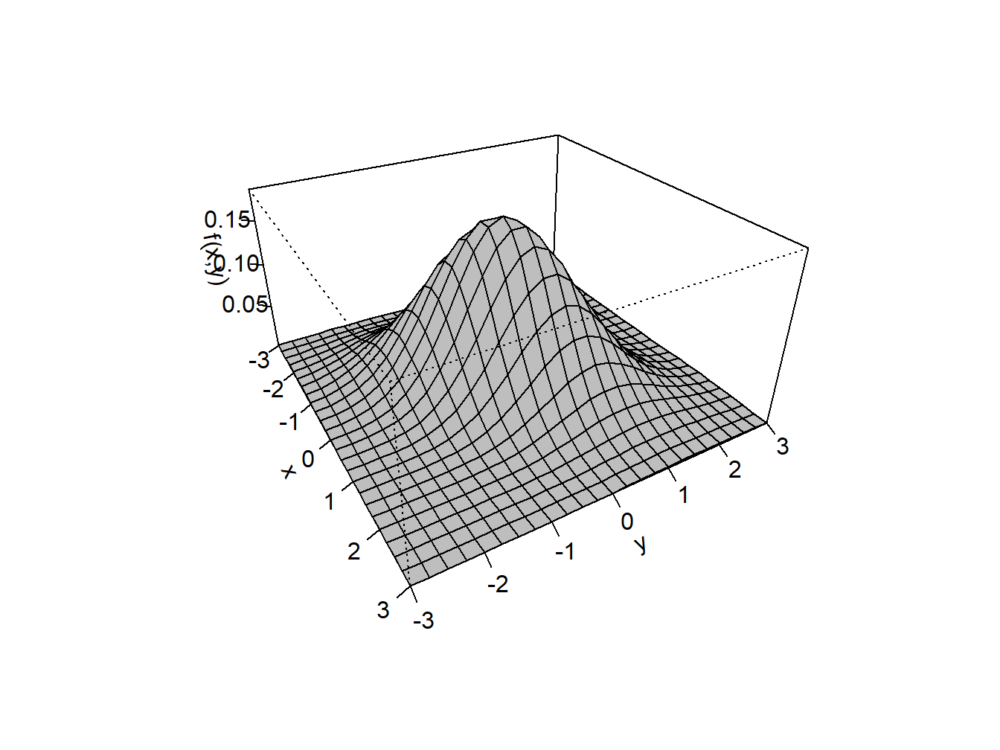
Figure 2.14: Bivariate normal pdf with \(\mu_{X}=\mu_{Y}=0\), \(\sigma_{X}\sigma_{Y}=1\) and \(\rho=0.5\).
The resulting plot is given in Figure Figure 2.14. \(\blacksquare\)
2.2.6 Expectation and variance of the sum of two random variables
Proposition 2.8 (Expectation and variance of the sum of two random variables) Let \(X\) and \(Y\) be two random variables with well defined means, variances and covariance and let \(a\) and \(b\) be constants. Then the following results hold: \[\begin{align*}
E[aX+bY] & =aE[X]+bE[Y]=a\mu_{X}+b\mu_{Y} \\
\mathrm{var}(aX+bY) & =a^{2}\mathrm{var}(X)+b^{2}\mathrm{var}(Y)+2\cdot a\cdot b\cdot\mathrm{cov}(X,Y)\\
& =a^{2}\sigma_{X}^{2}+b^{2}\sigma_{Y}^{2}+2\cdot a\cdot b\cdot\sigma_{XY}
\end{align*}\]
The first result states that the expected value of a linear combination of two random variables is equal to a linear combination of the expected values of the random variables. This result indicates that the expectation operator is a linear operator. In other words, expectation is additive. The second result states that variance of a linear combination of random variables is not a linear combination of the variances of the random variables. In particular, notice that covariance comes up as a term when computing the variance of the sum of two (not independent) random variables. Hence, the variance operator is not, in general, a linear operator. That is, variance, in general, is not additive.
It is instructive to go through the derivation of these results. Let \(X\) and \(Y\) be discrete random variables. Then, \[\begin{align*}
E[aX+bY] & =\sum_{x\in S_{X}}\sum_{y\in S_{y}}(ax+by)\Pr (X=x,Y=y)\\
& =\sum_{x\in S_{X}}\sum_{y\in S_{y}}ax\Pr(X=x,Y=y)+\sum_{x\in S_{X}}\sum_{y\in S_{y}}bx\Pr(X=x,Y=y)\\
& =a\sum_{x\in S_{X}}x\sum_{y\in S_{y}}\Pr(X=x,Y=y)+b\sum_{y\in S_{y}}y\sum_{x\in S_{X}}\Pr(X=x,Y=y)\\
& =a\sum_{x\in S_{X}}x\Pr(X=x)+b\sum_{y\in S_{y}}y\Pr(Y=y)\\
& =aE[X]+bE[Y]=a\mu_{X}+b\mu_{Y}.
\end{align*}\] The result for continuous random variables is similar. Effectively, the summations are replaced by integrals and the joint probabilities are replaced by the joint pdf.
Next, let \(X\) and \(Y\) be discrete or continuous random variables. Then, using the definition of variance you get: \[\begin{align*}
\mathrm{var}(aX+bY) & =E[(aX+bY-E[aX+bY])^{2}]\\
& =E[(aX+bY-a\mu_{X}-b\mu_{Y})^{2}]\\
& =E[(a(X-\mu_{X})+b(Y-\mu_{Y}))^{2}]\\
& =a^{2}E[(X-\mu_{X})^{2}]+b^{2}E[(Y-\mu_{Y})^{2}]+2\cdot a\cdot b\cdot E[(X-\mu_{X})(Y-\mu_{Y})]\\
& =a^{2}\mathrm{var}(X)+b^{2}\mathrm{var}(Y)+2\cdot a\cdot b\cdot\mathrm{cov}(X,Y).
\end{align*}\]
2.2.6.1 Linear combination of two normal random variables
The following proposition gives an important result concerning a linear combination of normal random variables.
Proposition 2.9 (Linear combination of normal random variables) Let \(X\sim N(\mu_{X},\sigma_{X}^{2})\), \(Y\sim N(\mu_{Y},\sigma_{Y}^{2})\), \(\sigma_{XY}=\mathrm{cov}(X,Y)\) and \(a\) and \(b\) be constants. Define the new random variable \(Z\) as: \[
Z=aX+bY.
\] Then, \[
Z\sim N(\mu_{Z},\sigma_{Z}^{2}),
\] where \(\mu_{Z}=a\mu_{X}+b\mu_{Y}\) and \(\sigma_{Z}^{2}=a^{2}\sigma_{X}^{2}+b^{2}\sigma_{Y}^{2}+2ab\sigma_{XY}\).
This important result states that a linear combination of two normally distributed random variables is itself a normally distributed random variable. The proof of the result relies on the change of variables theorem from calculus and is omitted. Not all random variables have the nice property that their distributions are closed under addition.
Example 2.52 (Portfolio of two assets) Consider a portfolio of two stocks \(A\) (Amazon) and \(B\) (Boeing) with investment shares \(x_{A}\) and \(x_{B}\) with \(x_{A}+x_{B}=1\). Let \(R_{A}\) and \(R_{B}\) denote the simple monthly returns on these assets, and assume that \(R_{A}\sim N(\mu_{A},\sigma_{A}^{2})\) and \(R_{B}\sim N(\mu_{B},\sigma_{B}^{2})\). Furthermore, let \(\sigma_{AB}=\rho_{AB}\sigma_{A}\sigma_{B}=\mathrm{cov}(R_{A},R_{B})\). The portfolio return is \(R_{p}=x_{A}R_{A}+x_{B}R_{B}\), which is a linear function of two random variables. Using the properties of linear functions of random variables, you get: \[\begin{align*}
\mu_{p} & =E[R_{p}]=x_{A}E[R_{A}]+x_{B}E[R_{B}]=x_{A}\mu_{A}+x_{B}\mu_{B}\\
\sigma_{p}^{2} & =\mathrm{var}(R_{p})=x_{A}^{2}\mathrm{var}(R_{A})+x_{B}^{2}\mathrm{var}(R_{B})+2x_{A}x_{B}\mathrm{cov}(R_{A},R_{B})\\
& =x_{A}^{2}\sigma_{A}^{2}+x_{B}^{2}\sigma_{B}^{2}+2x_{A}x_{B}\sigma_{AB}.
\end{align*}\]
\(\blacksquare\)
2.3 Multivariate Distributions
Multivariate distributions are used to characterize the joint distribution of a collection of \(N\) random variables \(X_{1},X_{2},\ldots,X_{N}\) for \(N>1\). The mathematical formulation of this joint distribution can be quite complex and typically makes use of matrix algebra. Here, I summarize some basic properties of multivariate distributions without the use of matrix algebra. In chapter Chapter 3, I will show how matrix algebra can greatly simplify the description of multivariate distributions.
2.3.1 Discrete random variables
Let \(X_{1},X_{2},\ldots,X_{N}\) be \(N\) discrete random variables with sample spaces \(S_{X_{1}},S_{X_{2}},\ldots,S_{X_{N}}\). The likelihood that these random variables take values in the joint sample space \(S_{X_{1}}\times S_{X_{2}}\times\cdots\times S_{X_{N}}\) is given by the joint probability function: \[
p(x_{1},x_{2},\ldots,x_{N})=\Pr(X_{1}=x_{1},X_{2}=x_{2},\ldots,X_{N}=x_{N}).
\] For \(N>2\) it is not easy to represent the joint probabilities in a table like Table Table 2.3 or to visualize the distribution.
Marginal distributions for each variable \(X_{i}\) can be derived from the joint distribution as in Equation 2.26 by summing the joint probabilities over the other variables \(j\neq i\). For example, \[
p(x_{1})=\sum_{x_{2}\in S_{X_{2}},\ldots,x_{N}\in S_{X_{N}}}p(x_{1},x_{2},\ldots,x_{N}).
\] With \(N\) random variables, there are numerous conditional distributions that can be formed. For example, the distribution of \(X_{1}\) given \(X_{2}=x_{2},\ldots,X_{N}=x_{N}\) is determined using: \[
\Pr(X_{1}=x_{1}|X_{2}=x_{2},\ldots,X_{N}=x_{N})=\frac{\Pr(X_{1}=x_{1},X_{2}=x_{2},\ldots,X_{N}=x_{N})}{\Pr(X_{2}=x_{2},\ldots,X_{N}=x_{N})}.
\] Similarly, the joint distribution of \(X_{1}\) and \(X_{2}\) given \(X_{3}=x_{3},\ldots,X_{N}=x_{N}\) is given by: \[\begin{align*}
\Pr(X_{1}=x_{1},X_{2}=x_{2}|X_{3}=x_{3},\ldots,X_{N}=x_{N}) \\
=\frac{\Pr(X_{1}=x_{1},X_{2}=x_{2},\ldots,X_{N}=x_{N})}{\Pr(X_{3}=x_{3},\ldots,X_{N}=x_{N})}.
\end{align*}\]
2.3.2 Continuous random variables
Let \(X_{1},X_{2},\ldots,X_{N}\) be \(N\) continuous random variables each taking values on the real line. The joint pdf is a function \(f(x_{1},x_{2},\ldots,x_{N})\geq0\) such that: \[
\int_{-\infty}^{\infty}\int_{-\infty}^{\infty}\cdots\int_{-\infty}^{\infty}f(x_{1},x_{2},\ldots,x_{N})~dx_{1}~dx_{2}\cdots~dx_{N}=1.
\] Joint probabilities of \(x_{11}\leq X_{1}\leq x_{12},x_{21}\leq X_{2}\leq x_{22},\ldots,x_{N1}\leq X_{N}\leq x_{N2}\) are computed by solving the integral equation: \[
\int_{x_{11}}^{x_{12}}\int_{x_{21}}^{x_{22}}\cdots\int_{x_{N1}}^{x_{N2}}f(x_{1},x_{2},\ldots,x_{N})~dx_{1}~dx_{2}\cdots~dx_{N}.
\tag{2.39}\] For most multivariate distributions, the integral in Equation 2.39 cannot be solved analytically and must be approximated numerically.
The marginal pdf for \(x_{i}\) is found by integrating the joint pdf with respect to the other variables. For example, the marginal pdf for \(x_{1}\) is found by solving: \[
f(x_{1})=\int_{-\infty}^{\infty}\cdots\int_{-\infty}^{\infty}f(x_{1},x_{2},\ldots,x_{N})~dx_{2}\cdots~dx_{N}.
\] Conditional pdf for a single random variable or a collection of random variables are defined in the obvious way.
2.3.3 Independence
A collection of \(N\) random variables are independent if their joint distribution factors into the product of all of the marginal distributions: \[\begin{align*}
p(x_{1},x_{2},\ldots,x_{N}) & =p(x_{1})p(x_{2})\cdots p(x_{N})\textrm{ for }X_{i}\textrm{ discrete},\\
f\left(x_{1},x_{2},\ldots,x_{N}\right) & =f(x_{1})f(x_{2})\cdots f(x_{N})\textrm{ for }X_{i}\textrm{ continuous}.
\end{align*}\] In addition, if \(N\) random variables are independent then any functions of these random variables are also independent.
2.3.4 Dependence concepts
In general, it is difficult to define dependence concepts for collections of more than two random variables. Dependence is typically only defined between pairwise random variables. Hence, covariance and correlation are also useful concepts when dealing with more than two random variables.
For \(N\) random variables \(X_{1},X_{2},\ldots,X_{N}\), with mean values \(\mu_{i}=E[X_{i}]\) and variances \(\sigma_{i}^{2}=\mathrm{var}(X_{i})\), the pairwise covariances and correlations are defined as: \[\begin{align*}
\mathrm{cov}(X_{i},X_{j}) & =\sigma_{ij}=E[(X_{i}-\mu_{i})(X_{j}-\mu_{i})],\\
\mathrm{cov}(X_{i},X_{j}) & =\rho_{ij}=\frac{\sigma_{ij}}{\sigma_{i}\sigma_{j}},
\end{align*}\] for \(i\neq j\). There are \(N(N-1)/2\) pairwise covariances and correlations. Often, these values are summarized using matrix algebra in an \(N\times N\) covariance matrix \(\boldsymbol{\Sigma}\) and an \(N\times N\) correlation matrix \(\mathbf{C}\): \[
\begin{aligned}
\boldsymbol{\Sigma} & =\left(\begin{array}{cccc}
\sigma_{1}^{2} & \sigma_{12} & \cdots & \sigma_{1N}\\
\sigma_{12} & \sigma_{2}^{2} & \cdots & \sigma_{2N}\\
\vdots & \vdots & \ddots & \vdots\\
\sigma_{1N} & \sigma_{2N} & \cdots & \sigma_{N}^{2}
\end{array}\right),
\end{aligned}
\tag{2.40}\]\[
\begin{aligned}
\mathbf{C} & =\left(\begin{array}{cccc}
1 & \rho_{12} & \cdots & \rho_{1N}\\
\rho_{12} & 1 & \cdots & \rho_{2N}\\
\vdots & \vdots & \ddots & \vdots\\
\rho_{1N} & \rho_{2N} & \cdots & 1
\end{array}\right).
\end{aligned}
\tag{2.41}\] These matrices are formally defined in chapter Chapter 3.
2.3.5 Linear combinations of \(N\) random variables
Many of the results for manipulating a collection of random variables generalize in a straightforward way to the case of more than two random variables. The details of the generalizations are not important for our purposes. However, the following results will be used repeatedly throughout the book.
Proposition 2.10 (Linear combination of random variables) Let \(X_{1},X_{2},\ldots,X_{N}\) denote a collection of \(N\) random variables (discrete or continuous) with means \(\mu_{i}\), variances \(\sigma_{i}^{2}\) and covariances \(\sigma_{ij}\). Define the new random variable \(Z\) as a linear combination: \[
Z=a_{1}X_{1}+a_{2}X_{2}+\cdots+a_{N}X_{N}
\] where \(a_{1},a_{2},\ldots,a_{N}\) are constants. Then the following results hold: \[
\begin{aligned}
\mu_{Z} & =E[Z]=a_{1}E[X_{1}]+a_{2}E[X_{2}]+\cdots+a_{N}E[X_{N}]\\
& =\sum_{i=1}^{N}a_{i}E[X_{i}]=\sum_{i=1}^{N}a_{i}\mu_{i}.\nonumber
\end{aligned}
\tag{2.42}\]\[
\begin{aligned}
\sigma_{Z}^{2} & =\mathrm{var}(Z)=a_{1}^{2}\sigma_{1}^{2}+a_{2}^{2}\sigma_{2}^{2}+\cdots+a_{N}^{2}\sigma_{N}^{2}\\
& +2a_{1}a_{2}\sigma_{12}+2a_{1}a_{3}\sigma_{13}+\cdots+a_{1}a_{N}\sigma_{1N}\nonumber \\
& +2a_{2}a_{3}\sigma_{23}+2a_{2}a_{4}\sigma_{24}+\cdots+a_{2}a_{N}\sigma_{2N}\nonumber \\
& +\cdots+\nonumber \\
& +2a_{N-1}a_{N}\sigma_{(N-1)N}\nonumber \\
& =\sum_{i=1}^{N}a_{i}^{2}\sigma_{i}^{2}+2\sum_{i=1}^{N}\sum_{j\neq i}a_{i}a_{j}\sigma_{ij}.\nonumber
\end{aligned}
\tag{2.43}\]
The derivation of these results is very similar to the bivariate case and so is omitted. In addition, if all of the \(X_{i}\) are normally distributed then \(Z\) is also normally distributed with mean \(\mu_{Z}\) and variance \(\sigma_{Z}^{2}\) as described above.
The variance of a linear combination of \(N\) random variables contains \(N\) variance terms and \(N(N-1)\) covariance terms. For \(N=2,5,10\) and 100 the number of covariance terms in \(\mathrm{var}(Z)\) is \(2,\,20,\,90\) and \(9,900\), respectively. Notice that when \(N\) is large there are many more covariance terms than variance terms in \(\mathrm{var}(Z)\).
The expression for \(\mathrm{var}(Z)\) is messy. It can be simplified using matrix algebra notation, as explained in detail in chapter Chapter 3. To preview, define the \(N\times1\) vectors \(\mathbf{X}=(X_{1},\ldots,X_{N})^{\prime}\) and \(\mathbf{a}=(a_{1},\ldots,a_{N})^{\prime}\). Then \(Z=\mathbf{a}^{\prime}\mathbf{X}\) and \(\mathrm{var}(Z)=\mathrm{var}(\mathbf{a}^{\prime}\mathbf{X})=\mathbf{a}^{\prime}\boldsymbol{\Sigma} \mathbf{a}\), where \(\boldsymbol{\Sigma}\) is the \(N\times N\) covariance matrix, which is much more compact than Equation 3.13.
Example 2.53 (Square-root-of-time rule for multi-period continuously compounded returns) Let \(r_{t}\) denote the continuously compounded monthly return on an asset at times \(t=1,\ldots,12.\) Assume that \(r_{1},\ldots,r_{12}\) are independent and identically distributed (iid) \(N(\mu,\sigma^{2}).\) Recall, the annual continuously compounded return is equal to the sum of twelve monthly continuously compounded returns: \(r_{A}=r(12)=\sum_{t=1}^{12}r_{t}.\) Since each monthly return is normally distributed, the annual return is also normally distributed. The mean of \(r(12)\) is: \[\begin{align*}
E[r(12)] & =E\left[\sum_{t=1}^{12}r_{t}\right]\\
& =\sum_{t=1}^{12}E[r_{t}]\textrm{ (by linearity of expectation)},\\
& =\sum_{t=1}^{12}\mu\textrm{ (by identical distributions)},\\
& =12\cdot\mu.
\end{align*}\] Hence, the expected 12-month (annual) return is equal to 12 times the expected monthly return. The variance of \(r(12)\) is: \[\begin{align*}
\mathrm{var}(r(12)) & =\mathrm{var}\left(\sum_{t=1}^{12}r_{t}\right)\\
& =\sum_{t=1}^{12}\mathrm{var}(r_{t})\textrm{ (by independence)},\\
& =\sum_{j=0}^{11}\sigma^{2}\textrm{ (by identical distributions)},\\
& =12\cdot\sigma^{2},
\end{align*}\] so that the annual variance is also equal to 12 times the monthly variance. Hence, the annual standard deviation is \(\sqrt{12}\) times the monthly standard deviation: \(\mathrm{sd}(r(12))=\sqrt{12}\sigma\) (this result is known as the square-root-of-time rule). Therefore, \(r(12)\sim N(12\mu,12\sigma^{2})\). \(\blacksquare\)
2.3.6 Covariance between linear combinations of random variables
Consider the linear combinations of two random variables: \[\begin{align*}
Y & =aX_{1}+bX_{2},\\
Z & =cX_{3}+dX_{4},
\end{align*}\] where \(a,b,c\) and \(d\) are constants. The covariance between \(Y\) and \(Z\) is, \[\begin{align*}
\mathrm{cov}(Y,Z) & =\mathrm{cov}(aX_{1}+bX_{2},cX_{3}+dX_{4})\\
& =E[((aX_{1}+bX_{2})-(a\mu_{1}+b\mu_{2}))((cX_{3}+dX_{4})-(c\mu_{3}+d\mu_{4}))]\\
& =E[(a(X_{1}-\mu_{1})+b(X_{2}-\mu_{2}))(c(X_{3}-\mu_{3})+d(X_{4}-\mu_{4}))]\\
& =acE[(X_{1}-\mu_{1})(X_{3}-\mu_{3})]+adE[(X_{1}-\mu_{1})(X_{4}-\mu_{4})]\\
& +bcE[(X_{2}-\mu_{2})(X_{3}-\mu_{3})]+bdE[(X_{2}-\mu_{2})(X_{4}-\mu_{4})]\\
& =ac\mathrm{cov}(X_{1},X_{3})+ad\mathrm{cov}(X_{1},X_{4})+bc\mathrm{cov}(X_{2},X_{3})+bd\mathrm{cov}(X_{2},X_{4}).
\end{align*}\] Hence, covariance is additive for linear combinations of random variables. The result above extends in an obvious way to arbitrary linear combinations of random variables.
2.4 Further Reading: Review of Random Variables
This material in this chapter is a selected survey of topics, with applications to finance, typically covered in an introductory probability and statistics course using calculus. A good textbook for such a course is (DeGroot and Schervish 2011). Chapter 1 of (Carmona 2014) and the appendix of (Ruppert and Matteson 2015) give a slightly more advanced review than is presented here. Two slightly more advanced books, oriented towards economics students, are (Amemiya 1994) and (Goldberger 1991). Good introductory treatments of probability and statistics using R include (Dalgaard 2002) and (Verzani 2005). (Pfaff 2013) discusses some useful financial asset return distributions and their implementation in R.
2.5 Exercises
Exercise 2.1 Suppose \(X\) is a normally distributed random variable with mean \(0.05\) and variance \((0.10)^{2}.\) That is, \(X\sim N(0.05,\,(0,10)^{2})\). Use the pnorm() and qnorm() functions in R to compute the following:
\(\Pr(X\geq0.10)\), \(\Pr(X\leq-0.10)\).
\(\Pr(-0.05\leq X\leq0.15)\).
\(1\%\) and \(5\%\) quantiles, \(q_{0.01}^{R}\) and \(q_{0.05}^{R}\).
\(95\%\) and \(99\%\) quantiles, \(q_{0.95}^{R}\) and \(q_{0.99}^{R}\).
Exercise 2.2 Let \(X\) denote the monthly return on Microsoft Stock and let \(Y\) denote the monthly return on Starbucks stock. Assume that \(X\sim N(0.05,\,(0.10)^{2})\) and \(Y\sim N(0.025,\,(0.05)^{2})\).
Using a grid of values between \(-0.25\) and \(0.35\), plot the normal curves for \(X\) and \(Y\). Make sure that both normal curves are on the same plot.
Plot the points \((\sigma_{X},\mu_{X})=(0.10,0.05)\) and \((\sigma_{Y},\mu_{Y})=(0.05,0.025)\) in an x-y plot.
Comment on the risk-return tradeoffs for the two stocks.
Exercise 2.3 Let \(X_{1},\,X_{2},\,Y_{1},\) and \(Y_{2}\) be random variables. Show that \[\begin{align*}
\mathrm{Cov}(X_{1}+X_{2},Y_{1}+Y_{2}) = & \mathrm{Cov}(X_{1},Y_{1}) + \mathrm{Cov}(X_{1},Y_{2}) +\\
&\mathrm{Cov}(X_{2},Y_{1}) + \mathrm{Cov}(X_{2},Y_{2}).
\end{align*}\]
Exercise 2.4 Let \(X\) be a random variable with \(\mathrm{var}(X)<\infty.\) Show that \(\mathrm{var}(X)=E[(X-\mu_{X})^{2}]=E[X^{2}]-\mu_{X}^{2}.\)
Exercise 2.5 Let \(X\) and \(Y\) be a random variables such that \(\mathrm{cov}(X,Y)<\infty\).
If \(Y=aX+b\) where \(a>0\) show that \(\rho_{XY}=\mathrm{cor}(X,Y)=1.\)
If \(Y=aX+b\) where \(a<0\) show that \(\rho_{XY}=\mathrm{cor}(X,Y)=-1.\)
Exercise 2.6 Let \(R\) denote the simple monthly return on Microsoft stock and let \(W_{0}\) denote initial wealth to be invested over the month. Assume that \(R\sim N(0.04,\,(0.09)^{2})\) and that \(W_{0}=\$100,000\). Determine the 1% and 5% Value-at-Risk (VaR) over the month on the investment. That is, determine the loss in investment value that may occur over the next month with 1% probability and with 5% probability.
Exercise 2.7 Let \(R_{t}\) denote the simple monthly return and assume \(R_{t}\sim iid\,N(\mu,\sigma^{2}).\) Consider the 2-period return \(R_{t}(2)=(1+R_{t})(1+R_{t-1})-1\).
Assuming that \(\mathrm{cov}(R_{t},R_{t-1})=0,\) show that \(E[R_{t}R_{t-1}]=\mu^{2}.\) Hint: use \(\mathrm{cov}(R_{t},R_{t-1})=E[R_{t}R_{t-1}]-E[R_{t}]E[R_{t-1}]\).
Show that \(E[R_{t}(2)]=(1+\mu^{2})-1\).
Is \(R_{t}(2)\) normally distributed? Justify your answer.
Exercise 2.8 Let \(r\) denote the continuously compounded monthly return on Microsoft stock and let \(W_{0}\) denote initial wealth to be invested over the month. Assume that \(r\sim iid\,N(0.04,(0.09)^{2})\) and that \(W_{0}=\$100,000.\)
Determine the 1% and 5% value-at-risk (VaR) over the month on the investment. That is, determine the loss in investment value that may occur over the next month with 1% probability and with 5% probability. (Hint: compute the 1% and 5% quantile from the Normal distribution for \(r\) and then convert the continuously compounded return quantile to a simple return quantile using the transformation \(R=e^{r}-1\).)
Let \(r(12)=r_{1}+r_{2}+\cdots+r_{12}\) denote the 12-month (annual) continuously compounded return. Compute \(E[r(12)]\), \(\mathrm{var}(r(12))\) and \(\mathrm{sd}(r(12))\). What is the probability distribution of \(r(12)\)?
Using the probability distribution for \(r(12)\), determine the 1% and 5% value-at-risk (VaR) over the year on the investment.
Exercise 2.9 Let \(R_{VFINX}\) and \(R_{AAPL}\) denote the monthly simple returns on VFINX (Vanguard S&P 500 index) and AAPL (Apple stock). Suppose that \(R_{VFINX}\sim i.i.d.\,N(0.013,(0.037)^{2})\), \(R_{AAPL}\sim i.i.d.\,N(0.028,(0.073)^{2})\).
Sketch the normal distributions for the two assets on the same graph. Show the mean values and the ranges within 2 standard deviations of the mean. Which asset appears to be more risky?
Plot the risk-return tradeoff for the two assets. That is, plot the mean values of each asset on the y-axis and the standard deviations on the x-axis. Comment on the relationship.
Let \(W_{0}=\$1,000\) be the initial wealth invested in each asset. Compute the \(1\%\) monthly Value-at-Risk values for each asset. (Hint: \(q_{0.01}^{Z}=-2.326\)).
Continue with the above question, state in words what the \(1\%\) Value-at-Risk numbers represent (i.e., explain what \(1\%\) Value-at-Risk for a one month \(\$1,000\) investment means).
The normal distribution can be used to characterize the probability distribution of monthly simple returns or monthly continuously compounded returns. What are two problems with using the normal distribution for simple returns? Given these two problems, why might it be better to use the normal distribution for continuously compounded returns?
Exercise 2.10 In this question, you will examine the chi-square and Students t distributions. A chi-square random variable with \(n\) degrees of freedom, denoted \(X\sim\chi_{n}^{2},\) is defined as \(X=Z_{1}^{2}+Z_{2}^{2}+\cdots+Z_{n}^{2}\) where \(Z_{1},Z_{2},\ldots,Z_{n}\) are \(iid\,N(0,1)\) random variables. Notice that \(X\) only takes positive values. A Student’s t random variable with \(n\) degrees of freedom, denoted \(t\sim t_{n}\), is defined as \(t=Z/\sqrt{X/n}\), where \(Z\sim N(0,1)\), \(X\sim\chi_{n}^{2}\) and \(Z\) is independent of \(X\). The Student’s t distribution is similar to the standard normal except that it has fatter tails.
On the same graph, plot the probability curves of chi-squared distributed random variables with 1, 2, 5 and 10 degrees of freedom. Use different colors and line styles for each curve. Hint: In R the density of the chi-square distribution is computed using the function dchisq().
On the same graph, plot the probability curves of Student’s t distributed random variables with 1, 2, 5 and 10 degrees of freedom. Also include the probability curve for the standard normal distribution. Use different colors and line styles for each curve. Hint: In R the density of the chi-square distribution is computed using the function dt().
Exercise 2.11 Consider the following joint distribution of \(X\) and \(Y\):
X/Y
1
2
3
1
0.1
0.2
0
2
0.1
0
0.2
3
0
0.1
0.3
Find the marginal distributions of \(X\) and \(Y\). Using these distributions, compute \(E[X]\), \(\mathrm{var}(X)\), \(\mathrm{sd}(X)\), \(E[Y]\), \(\mathrm{var}(Y)\) and \(\mathrm{sd}(Y)\).
Compute \(\mathrm{cov}(X,Y)\) and \(\mathrm{cor}(X,Y)\).
Find the conditional distributions \(\mathrm{Pr}(X|Y=y)\) for \(y=1,2,3\) and the conditional distributions \(\mathrm{Pr}(Y|X=x)\) for \(x=1,2,3.\)
Using the conditional distributions \(\mathrm{Pr}(X|Y=y)\) for \(y=1,2,3\) and \(\mathrm{Pr}(Y|X=x)\) for \(x=1,2,3\) compute \(E[X|Y=y]\) and \(E[Y|X=x]\).
Using the conditional distributions \(\mathrm{Pr}(X|Y=y)\) for \(y=1,2,3\) and \(\mathrm{Pr}(Y|X=x)\) for \(x=1,2,3\) compute \(\mathrm{var}[X|Y=y]\) and \(\mathrm{var}[Y|X=x]\).
Are \(X\) and \(Y\) independent? Fully justify your answer.
Exercise 2.12 Let \(X\) and \(Y\) be distributed bivariate normal with \(\mu_{X}=0.05\), \(\mu_{Y}=0.025\), \(\sigma_{X}=0.10\), and \(\sigma_{Y}=0.05\).
Using R package mvtnorm function rmvnorm(), simulate 100 observations from the bivariate normal distribution with \(\rho_{XY}=0.9\). Using the plot() function create a scatterplot of the observations and comment on the direction and strength of the linear association. Using the function pmvnorm(), compute the joint probability \(Pr(X\leq,\,Y\leq0)\).
Using R package mvtnorm function rmvnorm(), simulate 100 observations from the bivariate normal distribution with \(\rho_{XY}=-0.9\). Using the plot() function create a scatterplot of the observations and comment on the direction and strength of the linear association. Using the function pmvnorm(), compute the joint probability \(Pr(X\leq,\,Y\leq0)\).
Using R package mvtnorm function rmvnorm(), simulate 100 observations from the bivariate normal distribution with \(\rho_{XY}=0\). Using the plot() function create a scatterplot of the observations and comment on the direction and strength of the linear association. Using the function pmvnorm(), compute the joint probability \(Pr(X\leq,\,Y\leq0)\).
Amemiya, T. 1994. Introduction to Statistics and Econometrics. Cambridge, MA.: Harvard University Press.
Carmona, R. 2014. Statistical Analysis of Financial Data in r, Second Edition. New York: Springer.
Dalgaard, P. 2002. Introductory Statistics with r. Springer.
DeGroot, M. H., and M. J. Schervish. 2011. Probability and Statistics, 4th Edition. Pearson.
Goldberger, A. S. 1991. A Course in Econometrics. Cambridge, MA.: Harvard University Press.
Pfaff, B. 2013. Financial Risk Modelling and Portfolio Optimization with r. Chichester, UK.: Wiley.
Ruppert, D., and D. S. Matteson. 2015. Statistics and Data Analysis for Financial Engineering with r Examples. New York: Springer.
Verzani, J. 2005. Using r for Introductory Statistics. Boca Raton: Chapman & Hall/CRC.
If \(P_{t+1}\) is a positive random variable such that \(\ln P_{t+1}\) is normally distributed then \(P_{t+1}\) has a log-normal distribution.↩︎
An inflection point is a point where a curve goes from concave up to concave down, or vice versa.↩︎
The inverse function of \(F_{X}\) , denoted \(F_{X}^{-1},\) has the property that \(F_{X}^{-1}(F_{X}(x))=x.\)\(F_{X}^{-1}\) will exist if \(F_{X}\) is strictly increasing and is continuous.↩︎
Using R, \(z_{.05}=\mathrm{qnorm}(0.05)=-1.645\).↩︎